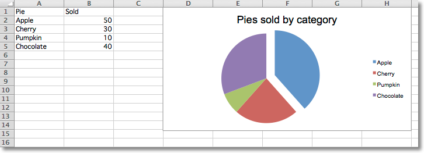
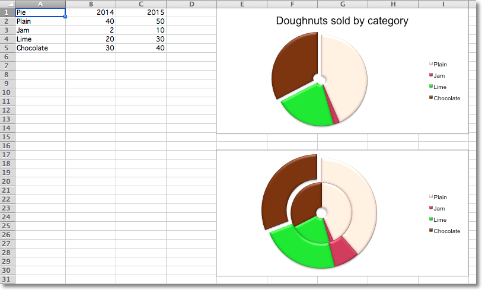
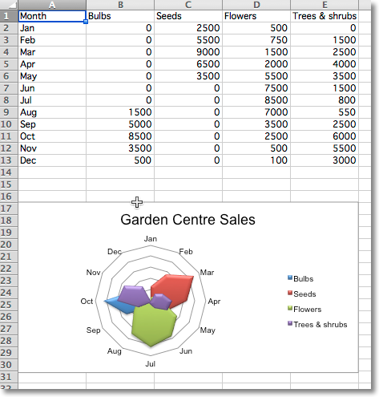
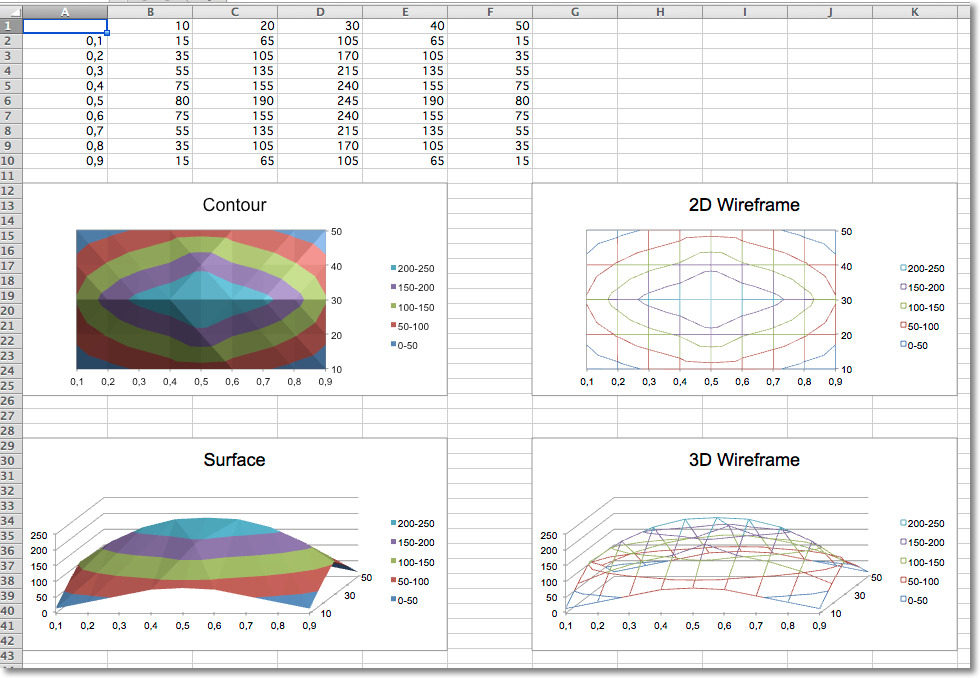
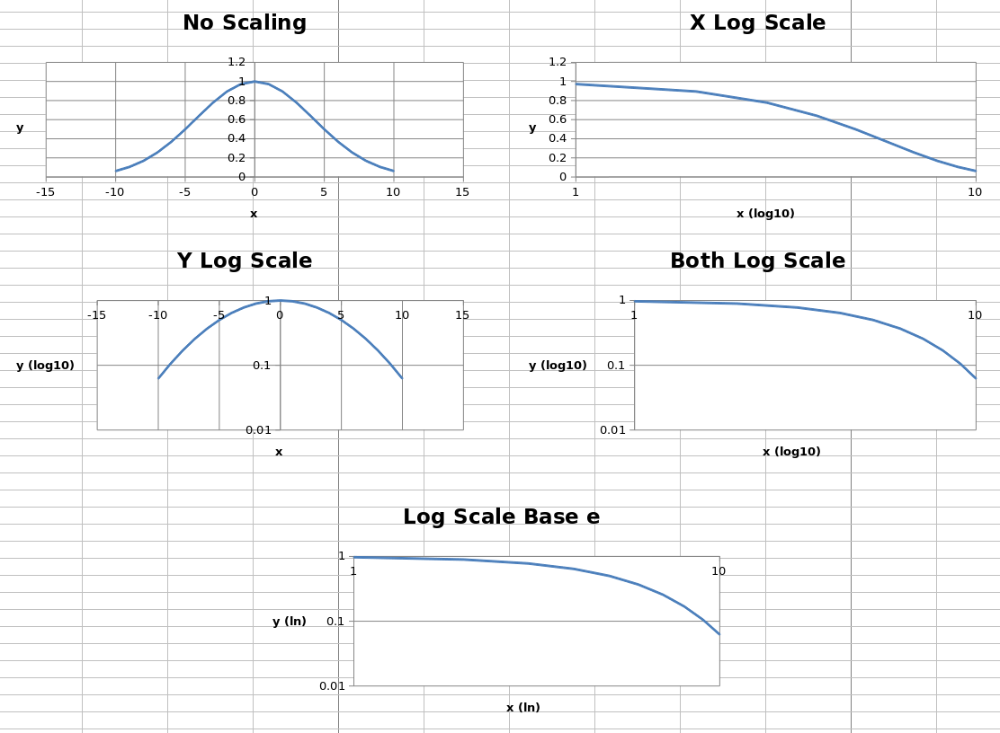
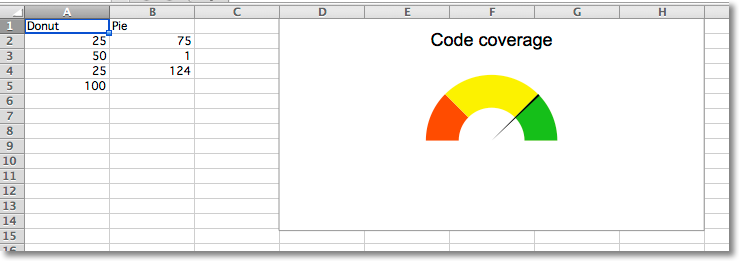
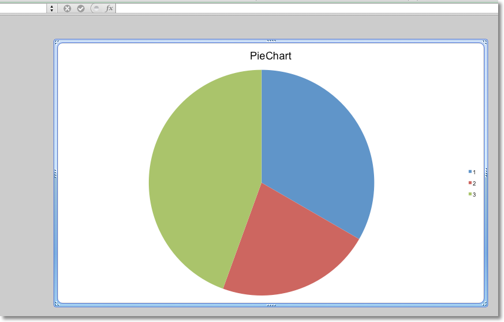

官方文档地址：https://openpyxl.readthedocs.io/en/stable/index.html
Introduction¶
openpyxl is a Python library to read/write Excel 2010 xlsx/xlsm/xltx/xltm files.
Mailing List¶
Sample code:
from openpyxl import Workbook
wb = Workbook()
# grab the active worksheet
ws = wb.active
# Data can be assigned directly to cells
ws['A1'] = 42
# Rows can also be appended
ws.append([1, 2, 3])
# Python types will automatically be converted
import datetime
ws['A2'] = datetime.datetime.now()
# Save the file
wb.save("sample.xlsx")
Tutorial¶
Installation¶
To be able to include images (jpeg, png, bmp,…) into an openpyxl file, you will also need the “pillow” library that can be installed with:
Create a workbook¶
There is no need to create a file on the filesystem to get started with openpyxl. Just import the Workbook class and start work:
A workbook is always created with at least one worksheet. You can get it by using the Workbook.active property:
This is set to 0 by default. Unless you modify its value, you will always get the first worksheet by using this method.
You can create new worksheets using the Workbook.create_sheet() method:
# insert at the end (default)
ws2 = wb.create_sheet("lastest_sheet")
# insert at first position
ws3 = wb.create_sheet("mysheet", 0)
# insert at second position
ws4 = wb.create_sheet("mysheet", 1)
# insert at the penultimate position
ws5 = wb.create_sheet("mysheet", -1)
penultimate: 倒数第二
Sheets are given a name automatically when they are created. They are numbered in sequence (Sheet, Sheet1, Sheet2, …). You can change this name at any time with the Worksheet.title property:
Once you gave a worksheet a name, you can get it as a key of the workbook:
You can review the names of all worksheets of the workbook with the Workbook.sheetname attribute:
You can loop through worksheets
You can create copies of worksheets within a single workbook:
Only cells (including values, styles, hyperlinks and comments) and certain worksheet attributes (including dimensions, format and properties) are copied. All other workbook / worksheet attributes are not copied - e.g. Images, Charts.
cells:
certain:
dimensions:
You also cannot copy worksheets between workbooks. You cannot copy a worksheet if the workbook is open in read-only or write-only mode.
Playing with data¶
Accessing one cell¶
Now we know how to get a worksheet, we can start modifying cells content. Cells can be accessed directly as keys of the worksheet:
accessed
directly
This will return the cell at A4, or create one if it does not exist yet. Values can be directly assigned:
There is also the Worksheet.cell() method.
This provides access to cells using row and column notation:
notation:
When a worksheet is created in memory, it contains no cells. They are created when first accessed.
Because of this feature, scrolling through cells instead of accessing them directly will create them all in memory, even if you don’t assign them a value.
Something like
will create 100x100 cells in memory, for nothing.
Accessing many cells¶
Ranges of cells can be accessed using slicing:
Ranges of rows or columns can be obtained similarly:
You can also use the Worksheet.iter_rows() method:
>>> for row in ws.iter_rows(min_row=1, max_col=3, max_row=2):
... for cell in row:
... print(cell)
<Cell Sheet1.A1>
<Cell Sheet1.B1>
<Cell Sheet1.C1>
<Cell Sheet1.A2>
<Cell Sheet1.B2>
<Cell Sheet1.C2>
Likewise the Worksheet.iter_cols() method will return columns:
>>> for col in ws.iter_cols(min_row=1, max_col=3, max_row=2):
... for cell in col:
... print(cell)
<Cell Sheet1.A1>
<Cell Sheet1.A2>
<Cell Sheet1.B1>
<Cell Sheet1.B2>
<Cell Sheet1.C1>
<Cell Sheet1.C2>
For performance reasons the Worksheet.iter_cols() method is not available in read-only mode.
If you need to iterate through all the rows or columns of a file, you can instead use the Worksheet.rows property:
>>> ws = wb.active
>>> ws['C9'] = 'hello world'
>>> tuple(ws.rows)
((<Cell Sheet.A1>, <Cell Sheet.B1>, <Cell Sheet.C1>),
(<Cell Sheet.A2>, <Cell Sheet.B2>, <Cell Sheet.C2>),
(<Cell Sheet.A3>, <Cell Sheet.B3>, <Cell Sheet.C3>),
(<Cell Sheet.A4>, <Cell Sheet.B4>, <Cell Sheet.C4>),
(<Cell Sheet.A5>, <Cell Sheet.B5>, <Cell Sheet.C5>),
(<Cell Sheet.A6>, <Cell Sheet.B6>, <Cell Sheet.C6>),
(<Cell Sheet.A7>, <Cell Sheet.B7>, <Cell Sheet.C7>),
(<Cell Sheet.A8>, <Cell Sheet.B8>, <Cell Sheet.C8>),
(<Cell Sheet.A9>, <Cell Sheet.B9>, <Cell Sheet.C9>))
or the Worksheet.columns property:
>>> tuple(ws.columns)
((<Cell Sheet.A1>,
<Cell Sheet.A2>,
<Cell Sheet.A3>,
<Cell Sheet.A4>,
<Cell Sheet.A5>,
<Cell Sheet.A6>,
...
<Cell Sheet.B7>,
<Cell Sheet.B8>,
<Cell Sheet.B9>),
(<Cell Sheet.C1>,
<Cell Sheet.C2>,
<Cell Sheet.C3>,
<Cell Sheet.C4>,
<Cell Sheet.C5>,
<Cell Sheet.C6>,
<Cell Sheet.C7>,
<Cell Sheet.C8>,
<Cell Sheet.C9>))
For performance reasons the Worksheet.columns property is not available in read-only mode.
Values only¶
If you just want the values from a worksheet you can use the Worksheet.values property. This iterates over all the rows in a worksheet but returns just the cell values:
Both Worksheet.iter_rows() and Worksheet.iter_cols() can take the values_only parameter to return just the cell’s value:
>>> for row in ws.iter_rows(min_row=1, max_col=3, max_row=2, values_only=True):
... print(row)
(None, None, None)
(None, None, None)
Data storage¶
Once we have a Cell, we can assign it a value:
>>> c.value = 'hello, world'
>>> print(c.value)
'hello, world'
>>> d.value = 3.14
>>> print(d.value)
3.14
Saving to a file¶
The simplest and safest way to save a workbook is by using the Workbook.save() method of the Workbook object:
This operation will overwrite existing files without warning.
The filename extension is not forced to be xlsx or xlsm, although you might have some trouble opening it directly with another application if you don’t use an official extension.
If required, you can specify the attribute wb.template=True, to save a workbook as a template:
>>> wb = load_workbook('document.xlsx')
>>> wb.template = True
>>> wb.save('document_template.xltx')
Saving as a stream¶
If you want to save the file to a stream, e.g. when using a web application such as Pyramid, Flask or Django then you can simply provide a NamedTemporaryFile():
>>> from tempfile import NamedTemporaryFile
>>> from openpyxl import Workbook
>>> wb = Workbook()
>>> with NamedTemporaryFile() as tmp:
wb.save(tmp.name)
tmp.seek(0)
stream = tmp.read()
You should monitor the data attributes and document extensions for saving documents in the document templates and vice versa, otherwise the result table engine can not open the document.
The following will fail:
>>> wb = load_workbook('document.xlsx')
>>> # Need to save with the extension *.xlsx
>>> wb.save('new_document.xlsm')
>>> # MS Excel can't open the document
>>>
>>> # or
>>>
>>> # Need specify attribute keep_vba=True
>>> wb = load_workbook('document.xlsm')
>>> wb.save('new_document.xlsm')
>>> # MS Excel will not open the document
>>>
>>> # or
>>>
>>> wb = load_workbook('document.xltm', keep_vba=True)
>>> # If we need a template document, then we must specify extension as *.xltm.
>>> wb.save('new_document.xlsm')
>>> # MS Excel will not open the document
Loading from a file¶
You can use the openpyxl.load_workbook() to open an existing workbook:
>>> from openpyxl import load_workbook
>>> wb = load_workbook(filename = 'empty_book.xlsx')
>>> sheet_ranges = wb['range names']
>>> print(sheet_ranges['D18'].value)
3
There are several flags that can be used in load_workbook.
- data_only controls whether cells with formulae have either the formula (default) or the value stored the last time Excel read the sheet.
- keep_vba controls whether any Visual Basic elements are preserved or not (default). If they are preserved they are still not editable.
openpyxl does currently not read all possible items in an Excel file so shapes will be lost from existing files if they are opened and saved with the same name.
Simple usage¶
Example: Creating a simple spreadsheet and bar chart¶
In this example we’re going to create a sheet from scratch and add some data and then plot it. We’ll also explore some limited cell style and formatting.
The data we’ll be entering on the sheet is below:
| Species | Leaf Color | Height (cm) |
|---|---|---|
| Maple | Red | 549 |
| Oak | Green | 783 |
| Pine | Green | 1204 |
To start, let’s load in openpyxl and create a new workbook. and get the active sheet. We’ll also enter our tree data.
>>> wb = Workbook()
>>> ws = wb.active
>>> treeData = [["Type", "Leaf Color", "Height"], ["Maple", "Red", 549], ["Oak", "Green", 783], ["Pine", "Green", 1204]]
Next we’ll enter this data onto the worksheet. As this is a list of lists, we can simply use the Worksheet.append() function.
Now we should make our heading Bold to make it stand out a bit more, to do that we’ll need to create a styles.Font and apply it to all the cells in our header row.
>>> from openpyxl.styles import Font
>>> ft = Font(bold=True)
>>> for row in ws["A1:C1"]:
... for cell in row:
... cell.font = ft
It’s time to make some charts. First, we’ll start by importing the appropriate packages from openpyxl.chart then define some basic attributes
>>> from openpyxl.chart import BarChart, Series, Reference
>>> chart = BarChart()
>>> chart.type = "col"
>>> chart.title = "Tree Height"
>>> chart.y_axis.title = 'Height (cm)'
>>> chart.x_axis.title = 'Tree Type'
>>> chart.legend = None
That’s created the skeleton of what will be our bar chart. Now we need to add references to where the data is and pass that to the chart object
>>> data = Reference(ws, min_col=3, min_row=2, max_row=4, max_col=3)
>>> categories = Reference(ws, min_col=1, min_row=2, max_row=4, max_col=1)
>>> chart.add_data(data)
>>> chart.set_categories(categories)
Finally we can add it to the sheet.
And there you have it. If you open that doc now it should look something like this
Working with styles¶
Introduction¶
Styles are used to change the look of your data while displayed on screen. They are also used to determine the formatting for numbers.
Styles can be applied to the following aspects:
- font to set font size, color, underlining, etc.
- fill to set a pattern or color gradient
- border to set borders on a cell
- cell alignment
- protection
The following are the default values
# 导入所需模块
from openpyxl.styles import PatternFill, Border, Side, Alignment, Protection, Font
# 设置字体样式
font = Font(name='Calibri', # 字体名称
size=11, # 字体大小
bold=False, # 是否加粗
italic=False, # 是否斜体
vertAlign=None, # 垂直对齐方式
underline='none', # 下划线样式
strike=False, # 是否有删除线
color='FF000000' # 字体颜色
)
# 设置填充样式
fill = PatternFill(fill_type=None, # 填充类型
start_color='FFFFFFFF', # 起始颜色
end_color='FF000000' # 结束颜色
)
# 设置边框样式
border = Border(left=Side(border_style=None, # 左边框样式
color='FF000000'), # 左边框颜色
right=Side(border_style=None, # 右边框样式
color='FF000000'), # 右边框颜色
top=Side(border_style=None, # 上边框样式
color='FF000000'), # 上边框颜色
bottom=Side(border_style=None, # 下边框样式
color='FF000000'), # 下边框颜色
diagonal=Side(border_style=None, # 对角线样式
color='FF000000'), # 对角线颜色
diagonal_direction=0, # 对角线方向
outline=Side(border_style=None, # 外边框样式
color='FF000000'), # 外边框颜色
vertical=Side(border_style=None, # 垂直边框样式
color='FF000000'), # 垂直边框颜色
horizontal=Side(border_style=None, # 水平边框样式
color='FF000000') # 水平边框颜色
)
# 设置对齐方式
alignment=Alignment(horizontal='general', # 水平对齐方式
vertical='bottom', # 垂直对齐方式
text_rotation=0, # 文本旋转角度
wrap_text=False, # 是否自动换行
shrink_to_fit=False, # 是否缩小字体填充
indent=0 # 缩进值
)
# 设置数字格式
number_format = 'General'
# 设置保护方式
protection = Protection(locked=True, # 是否锁定
hidden=False # 是否隐藏
)
Cell Styles and Named Styles¶
There are two types of styles: cell styles and named styles, also known as style templates.
Cell Styles¶
Cell styles are shared between objects and once they have been assigned they cannot be changed. This stops unwanted side-effects such as changing the style for lots of cells when only one changes.
>>> from openpyxl.styles import colors
>>> from openpyxl.styles import Font, Color
>>> from openpyxl import Workbook
>>> wb = Workbook()
>>> ws = wb.active
>>>
>>> a1 = ws['A1']
>>> d4 = ws['D4']
>>> ft = Font(color="FF0000")
>>> a1.font = ft
>>> d4.font = ft
>>>
>>> a1.font.italic = True # is not allowed # doctest: +SKIP
>>>
>>> # If you want to change the color of a Font, you need to reassign it::
>>>
>>> a1.font = Font(color="FF0000", italic=True) # the change only affects A1
Copying styles¶
>>> from openpyxl.styles import Font
>>> from copy import copy
>>>
>>> ft1 = Font(name='Arial', size=14)
>>> ft2 = copy(ft1)
>>> ft2.name = "Tahoma"
>>> ft1.name
'Arial'
>>> ft2.name
'Tahoma'
>>> ft2.size # copied from the
14.0
Colours¶
Colours for fonts, backgrounds, borders, etc. can be set in three ways: indexed, aRGB or theme. Indexed colours are the legacy implementation and the colours themselves depend upon the index provided with the workbook or with the application default. Theme colours are useful for complementary shades of colours but also depend upon the theme being present in the workbook. It is, therefore, advisable to use aRGB colours.
aRGB colours¶
RGB colours are set using hexadecimal values for red, green and blue.
The alpha value refers in theory to the transparency of the colour but this is not relevant for cell styles. The default of 00 will prepended to any simple RGB value:
There is also support for legacy indexed colours as well as themes and tints.
>>> from openpyxl.styles.colors import Color
>>> c = Color(indexed=32)
>>> c = Color(theme=6, tint=0.5)
Indexed Colours¶
The indices 64 and 65 cannot be set and are reserved for the system foreground and background colours respectively.
Applying Styles¶
Styles are applied directly to cells
>>> from openpyxl.workbook import Workbook
>>> from openpyxl.styles import Font, Fill
>>> wb = Workbook()
>>> ws = wb.active
>>> c = ws['A1']
>>> c.font = Font(size=12)
Styles can also applied to columns and rows but note that this applies only to cells created (in Excel) after the file is closed. If you want to apply styles to entire rows and columns then you must apply the style to each cell yourself. This is a restriction of the file format:
>>> col = ws.column_dimensions['A']
>>> col.font = Font(bold=True)
>>> row = ws.row_dimensions[1]
>>> row.font = Font(underline="single")
Styling Merged Cells¶
The merged cell behaves similarly to other cell objects. Its value and format is defined in its top-left cell. In order to change the border of the whole merged cell, change the border of its top-left cell. The formatting is generated for the purpose of writing.
# 导入所需模块
from openpyxl.styles import Border, Side, PatternFill, Font, GradientFill, Alignment
from openpyxl import Workbook
# 创建一个工作簿
wb = Workbook()
# 获取当前活动工作表
ws = wb.active
# 合并单元格
ws.merge_cells('B2:F4')
# 获取左上角单元格
top_left_cell = ws['B2']
# 给单元格赋值
top_left_cell.value = "My Cell"
# 设置边框样式
thin = Side(border_style="thin", color="000000")
double = Side(border_style="double", color="ff0000")
top_left_cell.border = Border(top=double, left=thin, right=thin, bottom=double)
# 设置填充样式
top_left_cell.fill = PatternFill("solid", fgColor="DDDDDD")
top_left_cell.fill = fill = GradientFill(stop=("000000", "FFFFFF"))
# 设置字体样式
top_left_cell.font = Font(b=True, color="FF0000")
# 设置对齐方式
top_left_cell.alignment = Alignment(horizontal="center", vertical="center")
# 保存工作簿
wb.save("styled.xlsx")
Using number formats¶
You can specify the number format for cells, or for some instances (ie datetime) it will automatically format.
import datetime # 导入datetime模块
from openpyxl import Workbook # 导入openpyxl模块中的Workbook类
wb = Workbook() # 创建一个Workbook对象
ws = wb.active # 获取当前活动的worksheet对象
# 设置日期，使用Python datetime
ws['A1'] = datetime.datetime(2010, 7, 21) # 在A1单元格中写入日期
ws['A1'].number_format # 设置单元格格式为日期格式
ws["A2"] = 0.123456 # 在A2单元格中写入数字
ws["A2"].number_format = "0.00" # 设置单元格格式为保留两位小数
Edit Page Setup¶
# 导入openpyxl库中的Workbook类
from openpyxl.workbook import Workbook
# 创建一个Workbook对象
wb = Workbook()
# 获取当前活动的工作表
ws = wb.active
# 设置页面方向为横向
ws.page_setup.orientation = ws.ORIENTATION_LANDSCAPE
# 设置页面纸张大小为TABLOID
ws.page_setup.paperSize = ws.PAPERSIZE_TABLOID
# 设置页面高度自适应
ws.page_setup.fitToHeight = 0
# 设置页面宽度自适应
ws.page_setup.fitToWidth = 1
Named Styles¶
In contrast to Cell Styles, Named Styles are mutable. They make sense when you want to apply formatting to lots of different cells at once. NB. once you have assigned a named style to a cell, additional changes to the style will not affect the cell.
Once a named style has been registered with a workbook, it can be referred to simply by name.
Creating a Named Style¶
# 导入所需模块
from openpyxl.styles import NamedStyle, Font, Border, Side
# 创建一个名为highlight的样式
highlight = NamedStyle(name="highlight")
# 设置字体为粗体，大小为20
highlight.font = Font(bold=True, size=20)
# 设置边框样式为粗边框，颜色为黑色
bd = Side(style='thick', color="000000")
highlight.border = Border(left=bd, top=bd, right=bd, bottom=bd)
Once a named style has been created, it can be registered with the workbook:
But named styles will also be registered automatically the first time they are assigned to a cell:
Once registered, assign the style using just the name:
Using builtin styles¶
The specification includes some builtin styles which can also be used. Unfortunately, the names for these styles are stored in their localised forms. openpyxl will only recognise the English names and only exactly as written here. These are as follows:
- ‘Normal’ # same as no style
Number formats¶
- ‘Comma’ “逗号”
- ‘Comma [0]’ '逗号 [0]'
- ‘Currency’ “货币”
- ‘Currency [0]’ '货币 [0]'
- ‘Percent’ “百分比”
Informative¶
- ‘Calculation’ “计算”
- ‘Total’ “总计”
- ‘Note’ “注意”
- ‘Warning Text’ “警告文本”
- ‘Explanatory Text’ “解释性文本”
Text styles¶
- ‘Title’ “标题”
- ‘Headline 1’ “标题 1”
- ‘Headline 2’ “标题 2”
- ‘Headline 3’ “标题 3”
- ‘Headline 4’ “标题 4”
- ‘Hyperlink’ “超链接”
- ‘Followed Hyperlink’ “已关注的超链接”
- ‘Linked Cell’ “链接单元格”
Comparisons¶
- ‘Input’ “输入”
- ‘Output’ “输出”
- ‘Check Cell’ “检查单元格”
- ‘Good’ “好”
- ‘Bad’ “不好”
- ‘Neutral’ “中性”
Highlights¶
- ‘Accent1’ “口音1”
- ‘20 % - Accent1’ '20 % - 强调文字1'
- ‘40 % - Accent1’ '40 % - 强调文字1'
- ‘60 % - Accent1’ '60 % - 重音1'
- ‘Accent2’ “口音2”
- ‘20 % - Accent2’ '20 % - 重音2'
- ‘40 % - Accent2’ '40 % - 口音2'
- ‘60 % - Accent2’ '60 % - 重音2'
- ‘Accent3’ “口音3”
- ‘20 % - Accent3’ '20 % - 重音3'
- ‘40 % - Accent3’ '40 % - 重音3'
- ‘60 % - Accent3’ '60 % - 重音3'
- ‘Accent4’ “口音4”
- ‘20 % - Accent4’ '20 % - 口音4'
- ‘40 % - Accent4’ '40 % - 口音4'
- ‘60 % - Accent4’ '60 % - 重音4'
- ‘Accent5’ “口音5”
- ‘20 % - Accent5’ '20 % - 重音5'
- ‘40 % - Accent5’ '40 % - 重音5'
- ‘60 % - Accent5’ '60 % - 重音5'
- ‘Accent6’ “口音6”
- ‘20 % - Accent6’ '20 % - 重音6'
- ‘40 % - Accent6’ '40 % - 重音6'
- ‘60 % - Accent6’ '60 % - 重音6'
- ‘Pandas’ 《熊猫》
For more information about the builtin styles please refer to the openpyxl.styles.builtins
Working with Rich Text¶
Normally styles apply to everything in an individual cell. However, Rich Text allows formatting of parts of the text in a string.
Rich Text objects can contain a mix of unformatted text and TextBlock objects that contains an InlineFont style and a the text which is to be formatted like this. The result is a CellRichText object.
>>> from openpyxl.cell.text import InlineFont
>>> from openpyxl.cell.rich_text import TextBlock, CellRichText
>>> rich_string1 = CellRichText(
... 'This is a test ',
... TextBlock(InlineFont(b=True), 'xxx'),
... 'yyy'
... )
InlineFont objects are virtually identical to the Font objects, but use a different attribute name, rFont, for the name of the font. Unfortunately, this is required by OOXML and cannot be avoided.
inline_font = InlineFont(rFont='Calibri', # 字体名称
sz=22, # 字体大小，以1/144英寸（1/2点）为单位，必须为整数
charset=None, # 字符集（0到255），在UTF-8下需要较少
family=None, # 字体系列
b=True, # 是否加粗（True/False）
i=None, # 是否斜体（True/False）
strike=None, # 是否有删除线
outline=None, # 是否有轮廓线
shadow=None, # 是否有阴影
condense=None, # 是否压缩字体
extend=None, # 是否拉伸字体
color=None, # 字体颜色
u=None, # 是否有下划线
vertAlign=None, # 垂直对齐方式
scheme=None, # 字体方案
)
Fortunately, if you already have a Font object, you can simply initialize an InlineFont object with an existing Font object:
from openpyxl.cell.text import Font
# 创建一个Font对象
font = Font(name='Calibri', # 字体名称
size=11, # 字体大小
bold=False, # 是否加粗
italic=False, # 是否斜体
vertAlign=None, # 垂直对齐方式
underline='none', # 下划线类型
strike=False, # 是否有删除线
color='00FF0000') # 字体颜色
# 创建一个InlineFont对象
inline_font = InlineFont(font)
You can create InlineFont objects on their own, and use them later. This makes working with Rich Text cleaner and easier:
big = InlineFont(sz="30.0") # 定义大号字体
medium = InlineFont(sz="20.0") # 定义中号字体
small = InlineFont(sz="10.0") # 定义小号字体
bold = InlineFont(b=True) # 定义加粗字体
b = TextBlock # 定义文本块
rich_string2 = CellRichText( # 定义富文本
b(big, 'M'), # 大号字体的 M
b(medium, 'i'), # 中号字体的 i
b(small, 'x'), # 小号字体的 x
b(medium, 'e'), # 中号字体的 e
b(big, 'd') # 大号字体的 d
For example:
>>> red = InlineFont(color='FF000000')
>>> rich_string1 = CellRichText(['When the color ', TextBlock(red, 'red'), ' is used, you can expect ', TextBlock(red, 'danger')])
The CellRichText object is derived from list, and can be used as such.
Whitespace¶
CellRichText objects do not add whitespace between elements when rendering them as strings or saving files.
You can also cast it to a str to get only the text, without formatting.
Editing Rich Text¶
As editing large blocks of text with formatting can be tricky, the as_list() method returns a list of strings to make indexing easy.
>>> l = rich_string1.as_list()
>>> l
['When the color ', 'red', ' is used, you can expect ', 'danger']
>>> l.index("danger")
3
>>> rich_string1[3].text = "fun"
>>> str(rich_string1)
'When the color red is used, you can expect fun'
Rich Text assignment to cells¶
Rich Text objects can be assigned directly to cells
>>> from openpyxl import Workbook
>>> wb = Workbook()
>>> ws = wb.active
>>> ws['A1'] = rich_string1
>>> ws['A2'] = 'Simple string'
Conditional Formatting¶
Excel supports three different types of conditional formatting: builtins, standard and custom. Builtins combine specific rules with predefined styles. Standard conditional formats combine specific rules with custom formatting. In additional it is possible to define custom formulae for applying custom formats using differential styles.
The syntax for the different rules varies so much that it is not possible for openpyxl to know whether a rule makes sense or not.
The basic syntax for creating a formatting rule is:
>>> from openpyxl.formatting import Rule
>>> from openpyxl.styles import Font, PatternFill, Border
>>> from openpyxl.styles.differential import DifferentialStyle
>>> dxf = DifferentialStyle(font=Font(bold=True), fill=PatternFill(start_color='EE1111', end_color='EE1111'))
>>> rule = Rule(type='cellIs', dxf=dxf, formula=["10"])
Because the signatures for some rules can be quite verbose there are also some convenience factories for creating them.
Builtin formats¶
The builtins conditional formats are:
- ColorScale
- IconSet
- DataBar
Builtin formats contain a sequence of formatting settings which combine a type with an integer for comparison. Possible types are: ‘num’, ‘percent’, ‘max’, ‘min’, ‘formula’, ‘percentile’.
ColorScale¶
You can have color scales with 2 or 3 colors. 2 color scales produce a gradient from one color to another; 3 color scales use an additional color for 2 gradients.
The full syntax for creating a ColorScale rule is:
>>> from openpyxl.formatting.rule import ColorScale, FormatObject
>>> from openpyxl.styles import Color
>>> first = FormatObject(type='min')
>>> last = FormatObject(type='max')
>>> # colors match the format objects:
>>> colors = [Color('AA0000'), Color('00AA00')]
>>> cs2 = ColorScale(cfvo=[first, last], color=colors)
>>> # a three color scale would extend the sequences
>>> mid = FormatObject(type='num', val=40)
>>> colors.insert(1, Color('00AA00'))
>>> cs3 = ColorScale(cfvo=[first, mid, last], color=colors)
>>> # create a rule with the color scale
>>> from openpyxl.formatting.rule import Rule
>>> rule = Rule(type='colorScale', colorScale=cs3)
There is a convenience function for creating ColorScale rules
>>> from openpyxl.formatting.rule import ColorScaleRule
>>> rule = ColorScaleRule(start_type='percentile', start_value=10, start_color='FFAA0000',
... mid_type='percentile', mid_value=50, mid_color='FF0000AA',
... end_type='percentile', end_value=90, end_color='FF00AA00')
IconSet¶
Choose from the following set of icons: ‘3Arrows’, ‘3ArrowsGray’, ‘3Flags’, ‘3TrafficLights1’, ‘3TrafficLights2’, ‘3Signs’, ‘3Symbols’, ‘3Symbols2’, ‘4Arrows’, ‘4ArrowsGray’, ‘4RedToBlack’, ‘4Rating’, ‘4TrafficLights’, ‘5Arrows’, ‘5ArrowsGray’, ‘5Rating’, ‘5Quarters’
The full syntax for creating an IconSet rule is:
>>> from openpyxl.formatting.rule import IconSet, FormatObject
>>> first = FormatObject(type='percent', val=0)
>>> second = FormatObject(type='percent', val=33)
>>> third = FormatObject(type='percent', val=67)
>>> iconset = IconSet(iconSet='3TrafficLights1', cfvo=[first, second, third], showValue=None, percent=None, reverse=None)
>>> # assign the icon set to a rule
>>> from openpyxl.formatting.rule import Rule
>>> rule = Rule(type='iconSet', iconSet=iconset)
There is a convenience function for creating IconSet rules:
>>> from openpyxl.formatting.rule import IconSetRule
>>> rule = IconSetRule('5Arrows', 'percent', [10, 20, 30, 40, 50], showValue=None, percent=None, reverse=None)
DataBar¶
Currently, openpyxl supports the DataBars as defined in the original specification. Borders and directions were added in a later extension.
The full syntax for creating a DataBar rule is:
>>> from openpyxl.formatting.rule import DataBar, FormatObject
>>> first = FormatObject(type='min')
>>> second = FormatObject(type='max')
>>> data_bar = DataBar(cfvo=[first, second], color="638EC6", showValue=None, minLength=None, maxLength=None)
>>> # assign the data bar to a rule
>>> from openpyxl.formatting.rule import Rule
>>> rule = Rule(type='dataBar', dataBar=data_bar)
There is a convenience function for creating DataBar rules:
>>> from openpyxl.formatting.rule import DataBarRule
>>> rule = DataBarRule(start_type='percentile', start_value=10, end_type='percentile', end_value='90',
... color="FF638EC6", showValue="None", minLength=None, maxLength=None)
Standard conditional formats¶
The standard conditional formats are:
- Average
- Percent
- Unique or duplicate 唯一或重复
- Value
- Rank
>>> from openpyxl import Workbook
>>> from openpyxl.styles import Color, PatternFill, Font, Border
>>> from openpyxl.styles.differential import DifferentialStyle
>>> from openpyxl.formatting.rule import ColorScaleRule, CellIsRule, FormulaRule
>>>
>>> wb = Workbook()
>>> ws = wb.active
>>>
>>> # Create fill
>>> redFill = PatternFill(start_color='EE1111',
... end_color='EE1111',
... fill_type='solid')
>>>
>>> # Add a two-color scale
>>> # Takes colors in excel 'RRGGBB' style.
>>> ws.conditional_formatting.add('A1:A10',
... ColorScaleRule(start_type='min', start_color='AA0000',
... end_type='max', end_color='00AA00')
... )
>>>
>>> # Add a three-color scale
>>> ws.conditional_formatting.add('B1:B10',
... ColorScaleRule(start_type='percentile', start_value=10, start_color='AA0000',
... mid_type='percentile', mid_value=50, mid_color='0000AA',
... end_type='percentile', end_value=90, end_color='00AA00')
... )
>>>
>>> # Add a conditional formatting based on a cell comparison
>>> # addCellIs(range_string, operator, formula, stopIfTrue, wb, font, border, fill)
>>> # Format if cell is less than 'formula'
>>> ws.conditional_formatting.add('C2:C10',
... CellIsRule(operator='lessThan', formula=['C$1'], stopIfTrue=True, fill=redFill))
>>>
>>> # Format if cell is between 'formula'
>>> ws.conditional_formatting.add('D2:D10',
... CellIsRule(operator='between', formula=['1','5'], stopIfTrue=True, fill=redFill))
>>>
>>> # Format using a formula
>>> ws.conditional_formatting.add('E1:E10',
... FormulaRule(formula=['ISBLANK(E1)'], stopIfTrue=True, fill=redFill))
>>>
>>> # Aside from the 2-color and 3-color scales, format rules take fonts, borders and fills for styling:
>>> myFont = Font()
>>> myBorder = Border()
>>> ws.conditional_formatting.add('E1:E10',
... FormulaRule(formula=['E1=0'], font=myFont, border=myBorder, fill=redFill))
>>>
>>> # Highlight cells that contain particular text by using a special formula
>>> red_text = Font(color="9C0006")
>>> red_fill = PatternFill(bgColor="FFC7CE")
>>> dxf = DifferentialStyle(font=red_text, fill=red_fill)
>>> rule = Rule(type="containsText", operator="containsText", text="highlight", dxf=dxf)
>>> rule.formula = ['NOT(ISERROR(SEARCH("highlight",A1)))']
>>> ws.conditional_formatting.add('A1:F40', rule)
>>> wb.save("test.xlsx")
Formatting Entire Rows¶
Sometimes you want to apply a conditional format to more than one cell, say a row of cells which contain a particular value.
>>> ws.append(['Software', 'Developer', 'Version'])
>>> ws.append(['Excel', 'Microsoft', '2016'])
>>> ws.append(['openpyxl', 'Open source', '2.6'])
>>> ws.append(['OpenOffice', 'Apache', '4.1.4'])
>>> ws.append(['Word', 'Microsoft', '2010'])
We want to highlight the rows where the developer is Microsoft. We do this by creating an expression rule and using a formula to identify which rows contain software developed by Microsoft.
>>> red_fill = PatternFill(bgColor="FFC7CE")
>>> dxf = DifferentialStyle(fill=red_fill)
>>> r = Rule(type="expression", dxf=dxf, stopIfTrue=True)
>>> r.formula = ['$A2="Microsoft"']
>>> ws.conditional_formatting.add("A1:C10", r)
The formula uses an absolute reference to the column referred to, B in this case; but a relative row number, in this case 1 to the range over which the format is applied. It can be tricky to get this right but the rule can be adjusted even after it has been added to the worksheet’s conditional format collection.
Inserting and deleting rows and columns, moving ranges of cells¶
Inserting rows and columns¶
You can insert rows or columns using the relevant worksheet methods:
openpyxl.worksheet.worksheet.Worksheet.insert_rows()openpyxl.worksheet.worksheet.Worksheet.insert_cols()openpyxl.worksheet.worksheet.Worksheet.delete_rows()openpyxl.worksheet.worksheet.Worksheet.delete_cols()
The default is one row or column. For example to insert a row at 7 (before the existing row 7):
Deleting rows and columns¶
To delete the columns F:H:
Openpyxl does not manage dependencies, such as formulae, tables, charts, etc., when rows or columns are inserted or deleted. This is considered to be out of scope for a library that focuses on managing the file format. As a result, client code must implement the functionality required in any particular use case.
Moving ranges of cells¶
You can also move ranges of cells within a worksheet:
This will move the cells in the range D4:F10 up one row, and right two columns. The cells will overwrite any existing cells.
If cells contain formulae you can let openpyxl translate these for you, but as this is not always what you want it is disabled by default. Also only the formulae in the cells themselves will be translated. References to the cells from other cells or defined names will not be updated; you can use the Parsing Formulas translator to do this:
This will move the relative references in formulae in the range by one row and one column.
Merge / Unmerge cells¶
When you merge cells all cells but the top-left one are removed from the worksheet. To carry the border-information of the merged cell, the boundary cells of the merged cell are created as MergeCells which always have the value None. See Styling Merged Cells for information on formatting merged cells.
>>> from openpyxl.workbook import Workbook
>>>
>>> wb = Workbook()
>>> ws = wb.active
>>>
>>> ws.merge_cells('A2:D2')
>>> ws.unmerge_cells('A2:D2')
>>>
>>> # or equivalently
>>> ws.merge_cells(start_row=2, start_column=1, end_row=4, end_column=4)
>>> ws.unmerge_cells(start_row=2, start_column=1, end_row=4, end_column=4)
Additional Worksheet Properties¶
These are advanced properties for particular behaviours, the most used ones are the “fitTopage” page setup property and the tabColor that define the background color of the worksheet tab.
Available properties for worksheets¶
- “enableFormatConditionsCalculation” “启用格式条件计算”
- “filterMode” “过滤模式”
- “published” “已发布”
- “syncHorizontal” “同步水平”
- “syncRef” “同步参考”
- “syncVertical” “同步垂直”
- “transitionEvaluation” “过渡评估”
- “transitionEntry” “过渡条目”
- “tabColor” “标签颜色”
Available fields for page setup properties¶
“autoPageBreaks” “fitToPage” “
Available fields for outlines¶
- “applyStyles” “应用样式”
- “summaryBelow” “摘要下面”
- “summaryRight” “总结对”
- “showOutlineSymbols” “显示大纲符号”
By default, outline properties are intitialized so you can directly modify each of their 4 attributes, while page setup properties don’t. If you want modify the latter, you should first initialize a openpyxl.worksheet.properties.PageSetupProperties object with the required parameters. Once done, they can be directly modified by the routine later if needed.
>>> from openpyxl.workbook import Workbook
>>> from openpyxl.worksheet.properties import WorksheetProperties, PageSetupProperties
>>>
>>> wb = Workbook()
>>> ws = wb.active
>>>
>>> wsprops = ws.sheet_properties
>>> wsprops.tabColor = "1072BA"
>>> wsprops.filterMode = False
>>> wsprops.pageSetUpPr = PageSetupProperties(fitToPage=True, autoPageBreaks=False)
>>> wsprops.outlinePr.summaryBelow = False
>>> wsprops.outlinePr.applyStyles = True
>>> wsprops.pageSetUpPr.autoPageBreaks = True
Worksheet Views¶
There are also several convenient properties defined as worksheet views. You can use ws.sheet_view to set sheet attributes such as zoom, show formulas or if the tab is selected.
>>> from openpyxl.workbook import Workbook
>>>
>>> wb = Workbook()
>>> ws = wb.active
>>>
>>> ws.sheet_view.zoom = 85 # Sets 85% zoom
>>> ws.sheet_view.showFormulas = True
>>> ws.sheet_view.tabSelected = True
Fold (outline)¶
>>> import openpyxl
>>> wb = openpyxl.Workbook()
>>> ws = wb.create_sheet()
>>> ws.column_dimensions.group('A','D', hidden=True)
>>> ws.row_dimensions.group(1,10, hidden=True)
>>> wb.save('group.xlsx')
Validating cells¶
Data validators can be applied to ranges of cells but are not enforced or evaluated. Ranges do not have to be contiguous: eg. “A1 B2:B5” is contains A1 and the cells B2 to B5 but not A2 or B2.
Examples¶
>>> from openpyxl import Workbook
>>> from openpyxl.worksheet.datavalidation import DataValidation
>>>
>>> # Create the workbook and worksheet we'll be working with
>>> wb = Workbook()
>>> ws = wb.active
>>>
>>> # Create a data-validation object with list validation
>>> dv = DataValidation(type="list", formula1='"Dog,Cat,Bat"', allow_blank=True)
>>>
>>> # Optionally set a custom error message
>>> dv.error ='Your entry is not in the list'
>>> dv.errorTitle = 'Invalid Entry'
>>>
>>> # Optionally set a custom prompt message
>>> dv.prompt = 'Please select from the list'
>>> dv.promptTitle = 'List Selection'
>>>
>>> # Add the data-validation object to the worksheet
>>> ws.add_data_validation(dv)
>>> # Create some cells, and add them to the data-validation object
>>> c1 = ws["A1"]
>>> c1.value = "Dog"
>>> dv.add(c1)
>>> c2 = ws["A2"]
>>> c2.value = "An invalid value"
>>> dv.add(c2)
>>>
>>> # Or, apply the validation to a range of cells
>>> dv.add('B1:B1048576') # This is the same as for the whole of column B
>>>
>>> # Check with a cell is in the validator
>>> "B4" in dv
True
Validations without any cell ranges will be ignored when saving a workbook.
Excel and LibreOffice interpret the parameter showDropDown=True as the dropdown arrow should be hidden.
Other validation examples¶
Any whole number:
Any whole number above 100:
Any decimal number:
Any decimal number between 0 and 1:
Any date:
or time:
Any string at most 15 characters:
Cell range validation:
from openpyxl.utils import quote_sheetname
dv = DataValidation(type="list",
formula1="{0}!$B$1:$B$10".format(quote_sheetname(sheetname))
)
Custom rule:
Worksheet Tables¶
Worksheet tables are references to groups of cells. This makes certain operations such as styling the cells in a table easier.
Creating a table¶
from openpyxl import Workbook
from openpyxl.worksheet.table import Table, TableStyleInfo
wb = Workbook()
ws = wb.active
data = [
['Apples', 10000, 5000, 8000, 6000],
['Pears', 2000, 3000, 4000, 5000],
['Bananas', 6000, 6000, 6500, 6000],
['Oranges', 500, 300, 200, 700],
]
# add column headings. NB. these must be strings
ws.append(["Fruit", "2011", "2012", "2013", "2014"])
for row in data:
ws.append(row)
tab = Table(displayName="Table1", ref="A1:E5")
# Add a default style with striped rows and banded columns
style = TableStyleInfo(name="TableStyleMedium9", showFirstColumn=False,
showLastColumn=False, showRowStripes=True, showColumnStripes=True)
tab.tableStyleInfo = style
'''
Table must be added using ws.add_table() method to avoid duplicate names.
Using this method ensures table name is unque through out defined names and all other table name.
'''
ws.add_table(tab)
wb.save("table.xlsx")
Table names must be unique within a workbook. By default tables are created with a header from the first row and filters for all the columns and table headers and column headings must always contain strings.
In write-only mode you must add column headings to tables manually and the values must always be the same as the values of the corresponding cells (ee below for an example of how to do this), otherwise Excel may consider the file invalid and remove the table.
Styles are managed using the the TableStyleInfo object. This allows you to stripe rows or columns and apply the different colour schemes.
Working with Tables¶
ws.tables is a dictionary-like object of all the tables in a particular worksheet:
Get Table by name or range¶
Iterate through all tables in a worksheet¶
Get table name and range of all tables in a worksheet¶
Returns a list of table name and their ranges.
Delete a table¶
The number of tables in a worksheet¶
Manually adding column headings¶
In write-only mode you can either only add tables without headings:
Or initialise the column headings manually:
>>> headings = ["Fruit", "2011", "2012", "2013", "2014"] # all values must be strings
>>> table._initialise_columns()
>>> for column, value in zip(table.tableColumns, headings):
column.name = value
Filters¶
Filters will be added automatically to tables that contain header rows. It is not possible to create tables with header rows without filters.
Table as a Print Area¶
Excel can produce documents with the print area set to the table name. Openpyxl cannot, however, resolve such dynamic defintions and will raise a warning when trying to do so.
If you need to handle this you can extract the range of the table and define the print area as the appropriate cell range.
>>> from openpyxl import load_workbook
>>> wb = load_workbook("QueryTable.xlsx")
>>> ws = wb.active
>>> table_range = ws.tables["InvoiceData"]
>>> ws.print_area = table_range.ref # Ref is the cell range the table currently covers
Using filters and sorts¶
It’s possible to filter single range of values in a worksheet by adding an autofilter. If you need to filter multiple ranges, you can use tables and apply a separate filter for each table.
Filters and sorts can only be configured by openpyxl but will need to be applied in applications like Excel. This is because they actually rearrange, format and hide rows in the range.
To add a filter you define a range and then add columns. You set the range over which the filter by setting the ref attribute. Filters are then applied to columns in the range using a zero-based index, eg. in a range from A1:H10, colId 1 refers to column B. Openpyxl does not check the validity of such assignments.
from openpyxl import Workbook
from openpyxl.worksheet.filters import (
FilterColumn,
CustomFilter,
CustomFilters,
DateGroupItem,
Filters,
)
wb = Workbook()
ws = wb.active
data = [
["Fruit", "Quantity"],
["Kiwi", 3],
["Grape", 15],
["Apple", 3],
["Peach", 3],
["Pomegranate", 3],
["Pear", 3],
["Tangerine", 3],
["Blueberry", 3],
["Mango", 3],
["Watermelon", 3],
["Blackberry", 3],
["Orange", 3],
["Raspberry", 3],
["Banana", 3]
]
for r in data:
ws.append(r)
filters = ws.auto_filter
filters.ref = "A1:B15"
col = FilterColumn(colId=0) # for column A
col.filters = Filters(filter=["Kiwi", "Apple", "Mango"]) # add selected values
filters.filterColumn.append(col) # add filter to the worksheet
ws.auto_filter.add_sort_condition("B2:B15")
wb.save("filtered.xlsx")
This will add the relevant instructions to the file but will neither actually filter nor sort.
Advanced filters¶
The following predefined filters can be used: CustomFilter, DateGroupItem, DynamicFilter, ColorFilter, IconFilter and Top10 ColorFilter, IconFilter and Top10 all interact with conditional formats.
The signature and structure of the different kinds of filter varies significantly. As such it makes sense to familiarise yourself with either the openpyxl source code or the OOXML specification.
CustomFilter¶
CustomFilters can have one or two conditions which will operate either independently (the default), or combined by setting the and_ attribute. Filter can use the following operators: 'equal', 'lessThan', 'lessThanOrEqual', 'notEqual', 'greaterThanOrEqual', 'greaterThan'.
Filter values < 10 and > 90:
from openpyxl.worksheet.filters import CustomFilter, CustomFilters
flt1 = CustomFilter(operator="lessThan", val=10)
flt2 = CustomFilter(operator=greaterThan, val=90)
cfs = CustomFilters(customFilter=[flt1, flt2])
col = FilterColumn(colId=2, customFilters=cfs) # apply to **third** column in the range
filters.filter.append(col)
To combine the filters:
In addition, Excel has non-standardised functionality for pattern matching with strings. The options in Excel: begins with, ends with, contains and their negatives are all implemented using the equal (or for negatives notEqual) operator and wildcard in the value.
For example: for “begins with a”, use a*; for “ends with a”, use *a; and for “contains a””, use *a*.
DateGroupItem¶
Date filters can be set to allow filtering by different datetime criteria such as year, month or hour. As they are similar to lists of values you can have multiple items.
To filter by the month of March:
from openpyxl.worksheet.filters import DateGroupItem
df1 = DateGroupItem(month=3, dateTimeGrouping="month")
col = FilterColumn(colId=1) # second column
col.filters.dateGroupItem.append(df1)
df2 = DateGroupItem(year=1984, dateTimeGrouping="year") # add another element
col.filters.dateGroupItem.append(df2)
filters.filter.append(col)
Print Settings¶
openpyxl provides reasonably full support for print settings.
Edit Print Options¶
>>> from openpyxl.workbook import Workbook
>>>
>>> wb = Workbook()
>>> ws = wb.active
>>>
>>> ws.print_options.horizontalCentered = True
>>> ws.print_options.verticalCentered = True
Headers and Footers¶
Headers and footers use their own formatting language. This is fully supported when writing them but, due to the complexity and the possibility of nesting, only partially when reading them. There is support for the font, size and color for a left, centre/center, or right element. Granular control (highlighting individuals words) will require applying control codes manually.
>>> from openpyxl.workbook import Workbook
>>>
>>> wb = Workbook()
>>> ws = wb.active
>>>
>>> ws.oddHeader.left.text = "Page &[Page] of &N"
>>> ws.oddHeader.left.size = 14
>>> ws.oddHeader.left.font = "Tahoma,Bold"
>>> ws.oddHeader.left.color = "CC3366"
Also supported are evenHeader and evenFooter as well as firstHeader and firstFooter.
Add Print Titles¶
You can print titles on every page to ensure that the data is properly labelled.
>>> from openpyxl.workbook import Workbook
>>>
>>> wb = Workbook()
>>> ws = wb.active
>>>
>>> ws.print_title_cols = 'A:B' # the first two cols
>>> ws.print_title_rows = '1:1' # the first row
Add a Print Area¶
You can select a part of a worksheet as the only part that you want to print
>>> from openpyxl.workbook import Workbook
>>>
>>> wb = Workbook()
>>> ws = wb.active
>>>
>>> ws.print_area = 'A1:F10'
Change page layout and size¶
You can adjust the size and print orientation per sheet of a workbook.
>>>
>>> wb = Workbook()
>>> ws = wb.active
>>>
>>> ws.page_setup.orientation = ws.ORIENTATION_LANDSCAPE
>>> ws.page_setup.paperSize = ws.PAPERSIZE_A5
The table size is stored internally as an integer, a number of alias variables are also available for common sizes (refer to PAPERSIZE_* in openpyxl.worksheet.worksheet ). If you need a non-standard size, a full list can be found by searching ECMA-376 pageSetup and setting that value as the paperSize
Pivot Tables¶
openpyxl provides read-support for pivot tables so that they will be preserved in existing files. The specification for pivot tables, while extensive, is not very clear and it is not intended that client code should be able to create pivot tables. However, it should be possible to edit and manipulate existing pivot tables, eg. change their ranges or whether they should update automatically settings.
As is the case for charts, images and tables there is currently no management API for pivot tables so that client code will have to loop over the _pivots list of a worksheet.
Example¶
from openpyxl import load_workbook
wb = load_workbook("campaign.xlsx")
ws = wb["Results"]
pivot = ws._pivots[0] # any will do as they share the same cache
pivot.cache.refreshOnLoad = True
For further information see openpyxl.pivot.cache.CacheDefinition
Comments¶
Warning
Openpyxl currently supports the reading and writing of comment text only. Formatting information is lost. Comment dimensions are lost upon reading, but can be written. Comments are not currently supported if read_only=True is used.
Adding a comment to a cell¶
Comments have a text attribute and an author attribute, which must both be set
>>> from openpyxl import Workbook
>>> from openpyxl.comments import Comment
>>> wb = Workbook()
>>> ws = wb.active
>>> comment = ws["A1"].comment
>>> comment = Comment('This is the comment text', 'Comment Author')
>>> comment.text
'This is the comment text'
>>> comment.author
'Comment Author'
If you assign the same comment to multiple cells then openpyxl will automatically create copies
>>> from openpyxl import Workbook
>>> from openpyxl.comments import Comment
>>> wb=Workbook()
>>> ws=wb.active
>>> comment = Comment("Text", "Author")
>>> ws["A1"].comment = comment
>>> ws["B2"].comment = comment
>>> ws["A1"].comment is comment
True
>>> ws["B2"].comment is comment
False
Loading and saving comments¶
Comments present in a workbook when loaded are stored in the comment attribute of their respective cells automatically. Formatting information such as font size, bold and italics are lost, as are the original dimensions and position of the comment’s container box.
Comments remaining in a workbook when it is saved are automatically saved to the workbook file.
Comment dimensions can be specified for write-only. Comment dimension are in pixels.
>>> from openpyxl import Workbook
>>> from openpyxl.comments import Comment
>>> from openpyxl.utils import units
>>>
>>> wb=Workbook()
>>> ws=wb.active
>>>
>>> comment = Comment("Text", "Author")
>>> comment.width = 300
>>> comment.height = 50
>>>
>>> ws["A1"].comment = comment
>>>
>>> wb.save('commented_book.xlsx')
If needed, openpyxl.utils.units contains helper functions for converting from other measurements such as mm or points to pixels:
>>> from openpyxl import Workbook
>>> from openpyxl.comments import Comment
>>> from openpyxl.utils import units
>>>
>>> wb=Workbook()
>>> ws=wb.active
>>>
>>> comment = Comment("Text", "Author")
>>> comment.width = units.points_to_pixels(300)
>>> comment.height = units.points_to_pixels(50)
>>>
>>> ws["A1"].comment = comment
Dates and Times¶
Dates and times can be stored in two distinct ways in XLSX files: as an ISO 8601 formatted string or as a single number. openpyxl supports both representations and translates between them and Python’s datetime module representations when reading from and writing to files. In either representation, the maximum date and time precision in XLSX files is millisecond precision.
XLSX files are not suitable for storing historic dates (before 1900), due to bugs in Excel that cannot be fixed without causing backward compatibility problems. To discourage users from trying anyway, Excel deliberately refuses to recognize and display such dates. Consequently, it is not advised to use openpyxl for such purposes either, especially when exchanging files with others.
Timezones¶
The date and time representations in Excel do not support timezones, therefore openpyxl can only deal with naive datetime/time objects. Any timezone information attached to Python datetimes must be stripped off by the user before datetimes can be stored in XLSX files.
Using the ISO 8601 format¶
To make openpyxl store dates and times in the ISO 8601 format on writing your file, set the workbook’s iso_dates flag to True:
The benefit of using this format is that the meaning of the stored information is not subject to interpretation, as it is with the single number format [1].
The Office Open XML standard does not specify a supported subset of the ISO 8601 duration format for representing time interval durations. openpyxl therefore always uses the single number format for timedelta values when writing them to file.
The 1900 and 1904 date systems¶
The ‘date system’ of an XLSX file determines how dates and times in the single number representation are interpreted. XLSX files always use one of two possible date systems:
- In the 1900 date system (the default), the reference date (with number 1) is 1900-01-01.
- In the 1904 date system, the reference date (with number 0) is 1904-01-01.
Complications arise not only from the different start numbers of the reference dates, but also from the fact that the 1900 date system has a built-in (but wrong) assumption that the year 1900 had been a leap year. Excel deliberately refuses to recognize and display dates before the reference date correctly, in order to discourage people from storing historical data.
- More information on this issue is available from Microsoft:
https://docs.microsoft.com/en-us/office/troubleshoot/excel/1900-and-1904-date-systemhttps://docs.microsoft.com/en-us/office/troubleshoot/excel/wrongly-assumes-1900-is-leap-year
In workbooks using the 1900 date system, openpyxl behaves the same as Excel when translating between the worksheets’ date/time numbers and Python datetimes in January and February 1900. The only exception is 29 February 1900, which cannot be represented as a Python datetime object since it is not a valid date.
You can get the date system of a workbook like this:
>>> import openpyxl
>>> wb = openpyxl.Workbook()
>>> if wb.epoch == openpyxl.utils.datetime.CALENDAR_WINDOWS_1900:
... print("This workbook is using the 1900 date system.")
...
This workbook is using the 1900 date system.
and set it like this:
Handling timedelta values¶
Excel users can use number formats resembling [h]:mm:ss or [mm]:ss to display time interval durations, which openpyxl considers to be equivalent to timedeltas in Python. openpyxl recognizes these number formats when reading XLSX files and returns datetime.timedelta values for the corresponding cells.
When writing timedelta values from worksheet cells to file, openpyxl uses the [h]:mm:ss number format for these cells.
Simple Formualae¶
Using formulae¶
Formualae may be parsed and modified as well.
>>> from openpyxl import Workbook
>>> wb = Workbook()
>>> ws = wb.active
>>> # add a simple formula
>>> ws["A1"] = "=SUM(1, 1)"
>>> wb.save("formula.xlsx")
Warning
NB you must use the English name for a function and function arguments must be separated by commas and not other punctuation such as semi-colons.
openpyxl never evaluates formula but it is possible to check the name of a formula:
If you’re trying to use a formula that isn’t known this could be because you’re using a formula that was not included in the initial specification. Such formulae must be prefixed with _xlfn. to work.
Special formulae¶
Openpyxl also supports two special kinds of formulae: Array Formulae and Data Table Formulae. Given the frequent use of “data tables” within OOXML the latter are particularly confusing.
In general, support for these kinds of formulae is limited to preserving them in Excel files but the implementation is complete.
Array Formulae¶
Although array formulae are applied to a range of cells, they will only be visible for the top-left cell of the array. This can be confusing and a source of errors. To check for array formulae in a worksheet you can use the ws.array_formulae property which returns a dictionary of cells with array formulae definitions and the ranges they apply to.
Creating your own array formulae is fairly straightforward
>>> from openpyxl import Workbook
>>> from openpyxl.worksheet.formula import ArrayFormula
>>>
>>> wb = Workbook()
>>> ws = wb.active
>>> ws["E2"] = ArrayFormula("E2:E11", "=SUM(C2:C11*D2:D11)")
Note
The top-left most cell of the array formula must be the cell you assign it to, otherwise you will get errors on workbook load.
Note
In Excel the formula will appear in all the cells in the range in curly brackets {} but you should never use these in your own formulae.
Data Table Formulae¶
As with array formulae, data table formulae are applied to a range of cells. The table object themselves contain no formulae but only the definition of table: the cells covered and whether it is one dimensional or not, etc. For further information refer to the OOXML specification.
To find out whether a worksheet has any data tables, use the ws.table_formulae property.
Defined Names¶
The specification has the following to say about defined names:
“Defined names are descriptive text that is used to represents a cell, range of cells, formula, or constant value.”
This means they are very loosely defined. They might contain a constant, a formula, a single cell reference, a range of cells or multiple ranges of cells across different worksheets. Or all of the above. Cell references or ranges must use absolute coordinates and always include the name of the worksheet they’re in. Use the utilities absolute_coordinate() and quote_sheetname() to do this.
Defined names can either be restricted to individual worksheets or available globally for the whole workbook. Names must be unique within a collection; new items will replace existing ones with the name.
Accessing Global Definitions¶
Global definitions are stored in the workbook collection:
defn = wb.defined_names["my_range"]
# the destinations attribute contains a list of ranges in the definitions
dests = defn.destinations # returns a generator of (worksheet title, cell range) tuples
cells = []
for title, coord in dests:
ws = wb[title]
cells.append(ws[coord])
Accessing Worksheet Definitions¶
Definitions are assigned to a specific worksheet are only accessible from that worksheet:
Creating a Global Definition¶
Global definitions are assigned to the workbook collection:
from openpyxl import Workbook
from openpyxl.workbook.defined_name import DefinedName
from openpyxl.utils import quote_sheetname, absolute_coordinate
wb = Workbook()
ws = wb.active
# make sure sheetnames and cell references are quoted correctly
ref = "{quote_sheetname(ws.title)}!{absolute_coordinate('A1:A5')}"
defn = DefinedName("global_range", attr_text=ref)
wb.defined_names["global_range"] = defn
# key and `name` must be the same, the `.add()` method makes this easy
wb.defined_names.add(new_range)
Creating a Worksheet Definition¶
Definitions are assigned to a specific worksheet are only accessible from that worksheet:
# create a local named range (only valid for a specific sheet)
ws = wb["Sheet"]
ws.title = "My Sheet"
# make sure sheetnames and cell referencesare quoted correctly
ref = f"{quote_sheetname(ws.title)}!{absolute_coordinate('A6')}"
defn = DefinedName("private_range", attr_text=ref)
ws.defined_names.add(defn)
print(ws.defined_names["private_range"].attr_text)
Dynamic Named Ranges¶
Wherever relevant and possible, openpyxl will try and convert names that contain cell ranges into relevant object. For example, print areas and print titles, which are special cases of defined names, are mapped to print title and print area objects within a worksheet.
It is, however, possible to define ranges dynamically using other defined names, or objects such as tables. As openpyxl is unable to resolve such definitions, it will skip the definition and raise a warning. If you need to handle this you can extract the range of the defined name and set the print area as the appropriate cell range.
>>> from openpyxl import load_workbook
>>> wb = load_workbook("Example.xlsx")
>>> ws = wb.active
>>> area = ws.defined_names["TestArea"] # Globally defined named ranges can be used too
>>> ws.print_area = area.value # value is the cell range the defined name currently cover
Custom Document Properties¶
It is possible to add one or more CustomDocumentProperty objects to a workbook. These require a unique name (string) and can be one of 6 types:
- StringProperty
- IntProperty
- FloatProperty
- DateTimeProperty
- BoolProperty
- LinkProperty
LinkProperties are always associated with a defined name range.
These properties are globally for a workbook and accessed from the custom_doc_props attribute.
Sample use¶
Looping over all the custom properties (“custom_doc_props”):
Adding a new property:
from openpyxl.packaging.custom import (
BoolProperty,
DateTimeProperty,
FloatProperty,
IntProperty,
LinkProperty,
StringProperty,
CustomPropertyList,
)
props = CustomePropertyList()
props.append(StringProperty(name="PropName1", value="Something"))
Deleting properties¶
wb.custom_doc_props.append(StringProperty(name="PropName6", value="Something"))
# check the property
prop = wb.custom_doc_props["PropName6"]
# delete the string property:
del prop["PropName6"]
# save the file
wb.save('outfile.xlsx')
Note
Currently not all possible property types are supported. If openpyxl cannot read a particular type, it will provide a warning and ignore it.
Protection¶
Warning
Password protecting a workbook or worksheet only provides a quite basic level of security. The data is not encrypted, so can be modified by any number of freely available tools. In fact the specification states: “Worksheet or workbook element protection should not be confused with file security. It is meant to make your workbook safe from unintentional modification, and cannot protect it from malicious modification.”
Openpyxl provides support for protecting a workbook and worksheet from modification. The Open XML “Legacy Password Hash Algorithm” is used to generate hashed password values unless another algorithm is explicitly configured.
Workbook Protection¶
To prevent other users from viewing hidden worksheets, adding, moving, deleting, or hiding worksheets, and renaming worksheets, you can protect the structure of your workbook with a password. The password can be set using the openpyxl.workbook.protection.WorkbookProtection.workbookPassword() property
Similarly removing change tracking and change history from a shared workbook can be prevented by setting another password. This password can be set using the openpyxl.workbook.protection.WorkbookProtection.revisionsPassword() property
Other properties on the openpyxl.workbook.protection.WorkbookProtection object control exactly what restrictions are in place, but these will only be enforced if the appropriate password is set.
Specific setter functions are provided if you need to set the raw password value without using the default hashing algorithm - e.g.
Worksheet Protection¶
Various aspects of a worksheet can also be locked by setting attributes on the openpyxl.worksheet.protection.SheetProtection object. Unlike workbook protection, sheet protection may be enabled with or without using a password. Sheet protection is enabled using the openpxyl.worksheet.protection.SheetProtection.sheet attribute or calling enable() or disable():
>>> ws = wb.active
>>> ws.protection.sheet = True
>>> ws.protection.enable()
>>> ws.protection.disable()
If no password is specified, users can disable configured sheet protection without specifying a password. Otherwise they must supply a password to change configured protections. The password is set using the openpxyl.worksheet.protection.SheetProtection.password() property
Charts¶
Chart types¶
The following charts are available:
- Area Charts
- 2D Area Charts
- 3D Area Charts
- Bar and Column Charts
- Vertical, Horizontal and Stacked Bar Charts
- 3D Bar Charts
- Bubble Charts
- Line Charts
- Line Charts
- 3D Line Charts
- Scatter Charts
- Pie Charts
- Pie Charts
- Projected Pie Charts
- 3D Pie Charts
- Gradient Pie Charts
- Doughnut Charts
- Radar Charts
- Stock Charts
- Surface charts
Creating a chart¶
Charts are composed of at least one series of one or more data points. Series themselves are comprised of references to cell ranges.
>>> from openpyxl import Workbook
>>> wb = Workbook()
>>> ws = wb.active
>>> for i in range(10):
... ws.append([i])
>>>
>>> from openpyxl.chart import BarChart, Reference, Series
>>> values = Reference(ws, min_col=1, min_row=1, max_col=1, max_row=10)
>>> chart = BarChart()
>>> chart.add_data(values)
>>> ws.add_chart(chart, "E15")
>>> wb.save("SampleChart.xlsx")
By default the top-left corner of a chart is anchored to cell E15 and the size is 15 x 7.5 cm (approximately 5 columns by 14 rows). This can be changed by setting the anchor, width and height properties of the chart. The actual size will depend on operating system and device. Other anchors are possible; see openpyxl.drawing.spreadsheet_drawing for further information.
Working with axes¶
- Axis Limits and Scale
- Minima and Maxima
- Logarithmic Scaling
- Axis Orientation
- Adding a second axis
Change the chart layout¶
- Changing the layout of plot area and legend
- Chart layout
- Legend layout
Styling charts¶
Advanced charts¶
Charts can be combined to create new charts:
Using chartsheets¶
Charts can be added to special worksheets called chartsheets:
Positioning charts¶
Position charts using anchors:
Advanced chart formatting¶
Use graphical properties for advanced chart formatting:
- Advanced Options with Graphical Properties
- Make the chart background transparent
- Remove the border from a chart
- Reusing XML
Area Charts¶
2D Area Charts¶
Area charts are similar to line charts with the addition that the area underneath the plotted line is filled. Different variants are available by setting the grouping to “standard”, “stacked” or “percentStacked”; “standard” is the default.
from openpyxl import Workbook
from openpyxl.chart import (
AreaChart,
Reference,
Series,
)
wb = Workbook()
ws = wb.active
rows = [
['Number', 'Batch 1', 'Batch 2'],
[2, 40, 30],
[3, 40, 25],
[4, 50, 30],
[5, 30, 10],
[6, 25, 5],
[7, 50, 10],
]
for row in rows:
ws.append(row)
chart = AreaChart()
chart.title = "Area Chart"
chart.style = 13
chart.x_axis.title = 'Test'
chart.y_axis.title = 'Percentage'
cats = Reference(ws, min_col=1, min_row=1, max_row=7)
data = Reference(ws, min_col=2, min_row=1, max_col=3, max_row=7)
chart.add_data(data, titles_from_data=True)
chart.set_categories(cats)
ws.add_chart(chart, "A10")
wb.save("area.xlsx")
3D Area Charts¶
You can also create 3D area charts
from openpyxl import Workbook
from openpyxl.chart import (
AreaChart3D,
Reference,
Series,
)
wb = Workbook()
ws = wb.active
rows = [
['Number', 'Batch 1', 'Batch 2'],
[2, 30, 40],
[3, 25, 40],
[4 ,30, 50],
[5 ,10, 30],
[6, 5, 25],
[7 ,10, 50],
]
for row in rows:
ws.append(row)
chart = AreaChart3D()
chart.title = "Area Chart"
chart.style = 13
chart.x_axis.title = 'Test'
chart.y_axis.title = 'Percentage'
chart.legend = None
cats = Reference(ws, min_col=1, min_row=1, max_row=7)
data = Reference(ws, min_col=2, min_row=1, max_col=3, max_row=7)
chart.add_data(data, titles_from_data=True)
chart.set_categories(cats)
ws.add_chart(chart, "A10")
wb.save("area3D.xlsx")
This produces a simple 3D area chart where the third axis can be used to replace the legend:
Bar and Column Charts¶
In bar charts values are plotted as either horizontal bars or vertical columns.
Vertical, Horizontal and Stacked Bar Charts¶
Note
The following settings affect the different chart types.
Switch between vertical and horizontal bar charts by setting type to col or bar respectively.
When using stacked charts the overlap needs to be set to 100.
If bars are horizontal, x and y axes are reversed.

from openpyxl import Workbook
from openpyxl.chart import BarChart, Series, Reference
wb = Workbook(write_only=True)
ws = wb.create_sheet()
rows = [
('Number', 'Batch 1', 'Batch 2'),
(2, 10, 30),
(3, 40, 60),
(4, 50, 70),
(5, 20, 10),
(6, 10, 40),
(7, 50, 30),
]
for row in rows:
ws.append(row)
chart1 = BarChart()
chart1.type = "col"
chart1.style = 10
chart1.title = "Bar Chart"
chart1.y_axis.title = 'Test number'
chart1.x_axis.title = 'Sample length (mm)'
data = Reference(ws, min_col=2, min_row=1, max_row=7, max_col=3)
cats = Reference(ws, min_col=1, min_row=2, max_row=7)
chart1.add_data(data, titles_from_data=True)
chart1.set_categories(cats)
chart1.shape = 4
ws.add_chart(chart1, "A10")
from copy import deepcopy
chart2 = deepcopy(chart1)
chart2.style = 11
chart2.type = "bar"
chart2.title = "Horizontal Bar Chart"
ws.add_chart(chart2, "G10")
chart3 = deepcopy(chart1)
chart3.type = "col"
chart3.style = 12
chart3.grouping = "stacked"
chart3.overlap = 100
chart3.title = 'Stacked Chart'
ws.add_chart(chart3, "A27")
chart4 = deepcopy(chart1)
chart4.type = "bar"
chart4.style = 13
chart4.grouping = "percentStacked"
chart4.overlap = 100
chart4.title = 'Percent Stacked Chart'
ws.add_chart(chart4, "G27")
wb.save("bar.xlsx")
This will produce four charts illustrating the various possibilities.
3D Bar Charts¶
You can also create 3D bar charts
from openpyxl import Workbook
from openpyxl.chart import (
Reference,
Series,
BarChart3D,
)
wb = Workbook()
ws = wb.active
rows = [
(None, 2013, 2014),
("Apples", 5, 4),
("Oranges", 6, 2),
("Pears", 8, 3)
]
for row in rows:
ws.append(row)
data = Reference(ws, min_col=2, min_row=1, max_col=3, max_row=4)
titles = Reference(ws, min_col=1, min_row=2, max_row=4)
chart = BarChart3D()
chart.title = "3D Bar Chart"
chart.add_data(data=data, titles_from_data=True)
chart.set_categories(titles)
ws.add_chart(chart, "E5")
wb.save("bar3d.xlsx")
This produces a simple 3D bar chart
Bubble Charts¶
Bubble charts are similar to scatter charts but use a third dimension to determine the size of the bubbles. Charts can include multiple series.
"""
Sample bubble chart
"""
from openpyxl import Workbook
from openpyxl.chart import Series, Reference, BubbleChart
wb = Workbook()
ws = wb.active
rows = [
("Number of Products", "Sales in USD", "Market share"),
(14, 12200, 15),
(20, 60000, 33),
(18, 24400, 10),
(22, 32000, 42),
(),
(12, 8200, 18),
(15, 50000, 30),
(19, 22400, 15),
(25, 25000, 50),
]
for row in rows:
ws.append(row)
chart = BubbleChart()
chart.style = 18 # use a preset style
# add the first series of data
xvalues = Reference(ws, min_col=1, min_row=2, max_row=5)
yvalues = Reference(ws, min_col=2, min_row=2, max_row=5)
size = Reference(ws, min_col=3, min_row=2, max_row=5)
series = Series(values=yvalues, xvalues=xvalues, zvalues=size, title="2013")
chart.series.append(series)
# add the second
xvalues = Reference(ws, min_col=1, min_row=7, max_row=10)
yvalues = Reference(ws, min_col=2, min_row=7, max_row=10)
size = Reference(ws, min_col=3, min_row=7, max_row=10)
series = Series(values=yvalues, xvalues=xvalues, zvalues=size, title="2014")
chart.series.append(series)
# place the chart starting in cell E1
ws.add_chart(chart, "E1")
wb.save("bubble.xlsx")
This will produce a bubble chart with two series and should look something like this:
Line Charts¶
Line Charts¶
Line charts allow data to be plotted against a fixed axis. They are similar to scatter charts, the main difference is that with line charts each data series is plotted against the same values. Different kinds of axes can be used for the secondary axes.
Similar to bar charts there are three kinds of line charts: standard, stacked and percentStacked.
from datetime import date
from openpyxl import Workbook
from openpyxl.chart import (
LineChart,
Reference,
)
from openpyxl.chart.axis import DateAxis
wb = Workbook()
ws = wb.active
rows = [
['Date', 'Batch 1', 'Batch 2', 'Batch 3'],
[date(2015,9, 1), 40, 30, 25],
[date(2015,9, 2), 40, 25, 30],
[date(2015,9, 3), 50, 30, 45],
[date(2015,9, 4), 30, 25, 40],
[date(2015,9, 5), 25, 35, 30],
[date(2015,9, 6), 20, 40, 35],
]
for row in rows:
ws.append(row)
c1 = LineChart()
c1.title = "Line Chart"
c1.style = 13
c1.y_axis.title = 'Size'
c1.x_axis.title = 'Test Number'
data = Reference(ws, min_col=2, min_row=1, max_col=4, max_row=7)
c1.add_data(data, titles_from_data=True)
# Style the lines
s1 = c1.series[0]
s1.marker.symbol = "triangle"
s1.marker.graphicalProperties.solidFill = "FF0000" # Marker filling
s1.marker.graphicalProperties.line.solidFill = "FF0000" # Marker outline
s1.graphicalProperties.line.noFill = True
s2 = c1.series[1]
s2.graphicalProperties.line.solidFill = "00AAAA"
s2.graphicalProperties.line.dashStyle = "sysDot"
s2.graphicalProperties.line.width = 100050 # width in EMUs
s2 = c1.series[2]
s2.smooth = True # Make the line smooth
ws.add_chart(c1, "A10")
from copy import deepcopy
stacked = deepcopy(c1)
stacked.grouping = "stacked"
stacked.title = "Stacked Line Chart"
ws.add_chart(stacked, "A27")
percent_stacked = deepcopy(c1)
percent_stacked.grouping = "percentStacked"
percent_stacked.title = "Percent Stacked Line Chart"
ws.add_chart(percent_stacked, "A44")
# Chart with date axis
c2 = LineChart()
c2.title = "Date Axis"
c2.style = 12
c2.y_axis.title = "Size"
c2.y_axis.crossAx = 500
c2.x_axis = DateAxis(crossAx=100)
c2.x_axis.number_format = 'd-mmm'
c2.x_axis.majorTimeUnit = "days"
c2.x_axis.title = "Date"
c2.add_data(data, titles_from_data=True)
dates = Reference(ws, min_col=1, min_row=2, max_row=7)
c2.set_categories(dates)
ws.add_chart(c2, "A61")
wb.save("line.xlsx")

3D Line Charts¶
In 3D line charts the third axis is the same as the legend for the series.
from datetime import date
from openpyxl import Workbook
from openpyxl.chart import (
LineChart3D,
Reference,
)
from openpyxl.chart.axis import DateAxis
wb = Workbook()
ws = wb.active
rows = [
['Date', 'Batch 1', 'Batch 2', 'Batch 3'],
[date(2015,9, 1), 40, 30, 25],
[date(2015,9, 2), 40, 25, 30],
[date(2015,9, 3), 50, 30, 45],
[date(2015,9, 4), 30, 25, 40],
[date(2015,9, 5), 25, 35, 30],
[date(2015,9, 6), 20, 40, 35],
]
for row in rows:
ws.append(row)
c1 = LineChart3D()
c1.title = "3D Line Chart"
c1.legend = None
c1.style = 15
c1.y_axis.title = 'Size'
c1.x_axis.title = 'Test Number'
data = Reference(ws, min_col=2, min_row=1, max_col=4, max_row=7)
c1.add_data(data, titles_from_data=True)
ws.add_chart(c1, "A10")
wb.save("line3D.xlsx")
Scatter Charts¶
Scatter, or xy, charts are similar to some line charts. The main difference is that one series of values is plotted against another. This is useful where values are unordered.
from openpyxl import Workbook
from openpyxl.chart import (
ScatterChart,
Reference,
Series,
)
wb = Workbook()
ws = wb.active
rows = [
['Size', 'Batch 1', 'Batch 2'],
[2, 40, 30],
[3, 40, 25],
[4, 50, 30],
[5, 30, 25],
[6, 25, 35],
[7, 20, 40],
]
for row in rows:
ws.append(row)
chart = ScatterChart()
chart.title = "Scatter Chart"
chart.style = 13
chart.x_axis.title = 'Size'
chart.y_axis.title = 'Percentage'
xvalues = Reference(ws, min_col=1, min_row=2, max_row=7)
for i in range(2, 4):
values = Reference(ws, min_col=i, min_row=1, max_row=7)
series = Series(values, xvalues, title_from_data=True)
chart.series.append(series)
ws.add_chart(chart, "A10")
wb.save("scatter.xlsx")
Note
The specification says that there are the following types of scatter charts: ‘line’, ‘lineMarker’, ‘marker’, ‘smooth’, ‘smoothMarker’. However, at least in Microsoft Excel, this is just a shortcut for other settings that otherwise have no effect. For consistency with line charts, the style for each series should be set manually.
Pie Charts¶
Pie Charts¶
Pie charts plot data as slices of a circle with each slice representing the percentage of the whole. Slices are plotted in a clockwise direction with 0° being at the top of the circle. Pie charts can only take a single series of data. The title of the chart will default to being the title of the series.
from openpyxl import Workbook
from openpyxl.chart import (
PieChart,
ProjectedPieChart,
Reference
)
from openpyxl.chart.series import DataPoint
data = [
['Pie', 'Sold'],
['Apple', 50],
['Cherry', 30],
['Pumpkin', 10],
['Chocolate', 40],
]
wb = Workbook()
ws = wb.active
for row in data:
ws.append(row)
pie = PieChart()
labels = Reference(ws, min_col=1, min_row=2, max_row=5)
data = Reference(ws, min_col=2, min_row=1, max_row=5)
pie.add_data(data, titles_from_data=True)
pie.set_categories(labels)
pie.title = "Pies sold by category"
# Cut the first slice out of the pie
slice = DataPoint(idx=0, explosion=20)
pie.series[0].data_points = [slice]
ws.add_chart(pie, "D1")
ws = wb.create_sheet(title="Projection")
data = [
['Page', 'Views'],
['Search', 95],
['Products', 4],
['Offers', 0.5],
['Sales', 0.5],
]
for row in data:
ws.append(row)
projected_pie = ProjectedPieChart()
projected_pie.type = "pie"
projected_pie.splitType = "val" # split by value
labels = Reference(ws, min_col=1, min_row=2, max_row=5)
data = Reference(ws, min_col=2, min_row=1, max_row=5)
projected_pie.add_data(data, titles_from_data=True)
projected_pie.set_categories(labels)
ws.add_chart(projected_pie, "A10")
from copy import deepcopy
projected_bar = deepcopy(projected_pie)
projected_bar.type = "bar"
projected_bar.splitType = 'pos' # split by position
ws.add_chart(projected_bar, "A27")
wb.save("pie.xlsx")

Projected Pie Charts¶
Projected pie charts extract some slices from a pie chart and project them into a second pie or bar chart. This is useful when there are several smaller items in the data series. The chart can be split according to percent, val(ue) or pos(ition). If nothing is set then the application decides which to use. In addition custom splits can be defined.
3D Pie Charts¶
Pie charts can also be created with a 3D effect.
from openpyxl import Workbook
from openpyxl.chart import (
PieChart3D,
Reference
)
data = [
['Pie', 'Sold'],
['Apple', 50],
['Cherry', 30],
['Pumpkin', 10],
['Chocolate', 40],
]
wb = Workbook()
ws = wb.active
for row in data:
ws.append(row)
pie = PieChart3D()
labels = Reference(ws, min_col=1, min_row=2, max_row=5)
data = Reference(ws, min_col=2, min_row=1, max_row=5)
pie.add_data(data, titles_from_data=True)
pie.set_categories(labels)
pie.title = "Pies sold by category"
ws.add_chart(pie, "D1")
wb.save("pie3D.xlsx")
Gradient Pie Charts¶
Pie charts can also be created with gradient series.
from openpyxl import Workbook
from openpyxl.chart import (
PieChart,
Reference
)
from openpyxl.chart.series import DataPoint
from openpyxl.chart.shapes import GraphicalProperties
from openpyxl.drawing.fill import (
GradientFillProperties,
GradientStop,
LinearShadeProperties
)
from openpyxl.drawing.colors import SchemeColor
data = [
['Pie', 'Sold'],
['Apple', 50],
['Cherry', 30],
['Pumpkin', 10],
['Chocolate', 40],
]
wb = Workbook()
ws = wb.active
for row in data:
ws.append(row)
pie = PieChart()
labels = Reference(ws, min_col=1, min_row=2, max_row=5)
data = Reference(ws, min_col=2, min_row=1, max_row=5)
pie.add_data(data, titles_from_data=True)
pie.set_categories(labels)
pie.title = "Pies sold by category"
# Cut the first slice out of the pie and apply a gradient to it
slice = DataPoint(
idx=0,
explosion=20,
spPr=GraphicalProperties(
gradFill=GradientFillProperties(
gsLst=(
GradientStop(
pos=0,
prstClr='blue'
),
GradientStop(
pos=100000,
schemeClr=SchemeColor(
val='accent1',
lumMod=30000,
lumOff=70000
)
)
)
)
)
)
pie.series[0].data_points = [slice]
ws.add_chart(pie, "D1")
wb.save("pie.xlsx")
Doughnut Charts¶
Doughnut charts are similar to pie charts except that they use a ring instead of a circle. They can also plot several series of data as concentric rings.
from openpyxl import Workbook
from openpyxl.chart import (
DoughnutChart,
Reference,
Series,
)
from openpyxl.chart.series import DataPoint
data = [
['Pie', 2014, 2015],
['Plain', 40, 50],
['Jam', 2, 10],
['Lime', 20, 30],
['Chocolate', 30, 40],
]
wb = Workbook()
ws = wb.active
for row in data:
ws.append(row)
chart = DoughnutChart()
labels = Reference(ws, min_col=1, min_row=2, max_row=5)
data = Reference(ws, min_col=2, min_row=1, max_row=5)
chart.add_data(data, titles_from_data=True)
chart.set_categories(labels)
chart.title = "Doughnuts sold by category"
chart.style = 26
# Cut the first slice out of the doughnut
slices = [DataPoint(idx=i) for i in range(4)]
plain, jam, lime, chocolate = slices
chart.series[0].data_points = slices
plain.graphicalProperties.solidFill = "FAE1D0"
jam.graphicalProperties.solidFill = "BB2244"
lime.graphicalProperties.solidFill = "22DD22"
chocolate.graphicalProperties.solidFill = "61210B"
chocolate.explosion = 10
ws.add_chart(chart, "E1")
from copy import deepcopy
chart2 = deepcopy(chart)
chart2.title = None
data = Reference(ws, min_col=3, min_row=1, max_row=5)
series2 = Series(data, title_from_data=True)
series2.data_points = slices
chart2.series.append(series2)
ws.add_chart(chart2, "E17")
wb.save("doughnut.xlsx")

Radar Charts¶
Data that is arranged in columns or rows on a worksheet can be plotted in a radar chart. Radar charts compare the aggregate values of multiple data series. It is effectively a projection of an area chart on a circular x-axis.
There are two types of radar chart: standard, where the area is marked with a line; and filled, where the whole area is filled. The additional type “marker” has no effect. If markers are desired these can be set for the relevant series.
from openpyxl import Workbook
from openpyxl.chart import (
RadarChart,
Reference,
)
wb = Workbook()
ws = wb.active
rows = [
['Month', "Bulbs", "Seeds", "Flowers", "Trees & shrubs"],
['Jan', 0, 2500, 500, 0,],
['Feb', 0, 5500, 750, 1500],
['Mar', 0, 9000, 1500, 2500],
['Apr', 0, 6500, 2000, 4000],
['May', 0, 3500, 5500, 3500],
['Jun', 0, 0, 7500, 1500],
['Jul', 0, 0, 8500, 800],
['Aug', 1500, 0, 7000, 550],
['Sep', 5000, 0, 3500, 2500],
['Oct', 8500, 0, 2500, 6000],
['Nov', 3500, 0, 500, 5500],
['Dec', 500, 0, 100, 3000 ],
]
for row in rows:
ws.append(row)
chart = RadarChart()
chart.type = "filled"
labels = Reference(ws, min_col=1, min_row=2, max_row=13)
data = Reference(ws, min_col=2, max_col=5, min_row=1, max_row=13)
chart.add_data(data, titles_from_data=True)
chart.set_categories(labels)
chart.style = 26
chart.title = "Garden Centre Sales"
chart.y_axis.delete = True
ws.add_chart(chart, "A17")
wb.save("radar.xlsx")

Stock Charts¶
Data that is arranged in columns or rows in a specific order on a worksheet can be plotted in a stock chart. As its name implies, a stock chart is most often used to illustrate the fluctuation of stock prices. However, this chart may also be used for scientific data. For example, you could use a stock chart to indicate the fluctuation of daily or annual temperatures. You must organize your data in the correct order to create stock charts.
The way stock chart data is organized in the worksheet is very important. For example, to create a simple high-low-close stock chart, you should arrange your data with High, Low, and Close entered as column headings, in that order.
Although stock charts are a distinct type, the various types are just shortcuts for particular formatting options:
- high-low-close is essentially a line chart with no lines and the marker set to XYZ. It also sets hiLoLines to True
- open-high-low-close is the same as a high-low-close chart with the marker for each data point set to XZZ and upDownLines.
Volume can be added by combining the stock chart with a bar chart for the volume.
from datetime import date
from openpyxl import Workbook
from openpyxl.chart import (
BarChart,
StockChart,
Reference,
Series,
)
from openpyxl.chart.axis import DateAxis, ChartLines
from openpyxl.chart.updown_bars import UpDownBars
wb = Workbook()
ws = wb.active
rows = [
['Date', 'Volume','Open', 'High', 'Low', 'Close'],
['2015-01-01', 20000, 26.2, 27.20, 23.49, 25.45, ],
['2015-01-02', 10000, 25.45, 25.03, 19.55, 23.05, ],
['2015-01-03', 15000, 23.05, 24.46, 20.03, 22.42, ],
['2015-01-04', 2000, 22.42, 23.97, 20.07, 21.90, ],
['2015-01-05', 12000, 21.9, 23.65, 19.50, 21.51, ],
]
for row in rows:
ws.append(row)
# High-low-close
c1 = StockChart()
labels = Reference(ws, min_col=1, min_row=2, max_row=6)
data = Reference(ws, min_col=4, max_col=6, min_row=1, max_row=6)
c1.add_data(data, titles_from_data=True)
c1.set_categories(labels)
for s in c1.series:
s.graphicalProperties.line.noFill = True
# marker for close
s.marker.symbol = "dot"
s.marker.size = 5
c1.title = "High-low-close"
c1.hiLowLines = ChartLines()
# Excel is broken and needs a cache of values in order to display hiLoLines :-/
from openpyxl.chart.data_source import NumData, NumVal
pts = [NumVal(idx=i) for i in range(len(data) - 1)]
cache = NumData(pt=pts)
c1.series[-1].val.numRef.numCache = cache
ws.add_chart(c1, "A10")
# Open-high-low-close
c2 = StockChart()
data = Reference(ws, min_col=3, max_col=6, min_row=1, max_row=6)
c2.add_data(data, titles_from_data=True)
c2.set_categories(labels)
for s in c2.series:
s.graphicalProperties.line.noFill = True
c2.hiLowLines = ChartLines()
c2.upDownBars = UpDownBars()
c2.title = "Open-high-low-close"
# add dummy cache
c2.series[-1].val.numRef.numCache = cache
ws.add_chart(c2, "G10")
# Create bar chart for volume
bar = BarChart()
data = Reference(ws, min_col=2, min_row=1, max_row=6)
bar.add_data(data, titles_from_data=True)
bar.set_categories(labels)
from copy import deepcopy
# Volume-high-low-close
b1 = deepcopy(bar)
c3 = deepcopy(c1)
c3.y_axis.majorGridlines = None
c3.y_axis.title = "Price"
b1.y_axis.axId = 20
b1.z_axis = c3.y_axis
b1.y_axis.crosses = "max"
b1 += c3
c3.title = "High low close volume"
ws.add_chart(b1, "A27")
## Volume-open-high-low-close
b2 = deepcopy(bar)
c4 = deepcopy(c2)
c4.y_axis.majorGridlines = None
c4.y_axis.title = "Price"
b2.y_axis.axId = 20
b2.z_axis = c4.y_axis
b2.y_axis.crosses = "max"
b2 += c4
ws.add_chart(b2, "G27")
wb.save("stock.xlsx")
Warning
Due to a bug in Excel high-low lines will only be shown if at least one of the data series has some dummy values. This can be done with the following hack:
from openpyxl.chart.data_source import NumData, NumVal
pts = [NumVal(idx=i) for i in range(len(data) - 1)]
cache = NumData(pt=pts)
c1.series[-1].val.numRef.numCache = cache
Surface charts¶
Data that is arranged in columns or rows on a worksheet can be plotted in a surface chart. A surface chart is useful when you want to find optimum combinations between two sets of data. As in a topographic map, colors and patterns indicate areas that are in the same range of values.
By default all surface charts are 3D. 2D wireframe and contour charts are created by setting the rotation and perspective.
from openpyxl import Workbook
from openpyxl.chart import (
SurfaceChart,
SurfaceChart3D,
Reference,
Series,
)
from openpyxl.chart.axis import SeriesAxis
wb = Workbook()
ws = wb.active
data = [
[None, 10, 20, 30, 40, 50,],
[0.1, 15, 65, 105, 65, 15,],
[0.2, 35, 105, 170, 105, 35,],
[0.3, 55, 135, 215, 135, 55,],
[0.4, 75, 155, 240, 155, 75,],
[0.5, 80, 190, 245, 190, 80,],
[0.6, 75, 155, 240, 155, 75,],
[0.7, 55, 135, 215, 135, 55,],
[0.8, 35, 105, 170, 105, 35,],
[0.9, 15, 65, 105, 65, 15],
]
for row in data:
ws.append(row)
c1 = SurfaceChart()
ref = Reference(ws, min_col=2, max_col=6, min_row=1, max_row=10)
labels = Reference(ws, min_col=1, min_row=2, max_row=10)
c1.add_data(ref, titles_from_data=True)
c1.set_categories(labels)
c1.title = "Contour"
ws.add_chart(c1, "A12")
from copy import deepcopy
# wireframe
c2 = deepcopy(c1)
c2.wireframe = True
c2.title = "2D Wireframe"
ws.add_chart(c2, "G12")
# 3D Surface
c3 = SurfaceChart3D()
c3.add_data(ref, titles_from_data=True)
c3.set_categories(labels)
c3.title = "Surface"
ws.add_chart(c3, "A29")
c4 = deepcopy(c3)
c4.wireframe = True
c4.title = "3D Wireframe"
ws.add_chart(c4, "G29")
wb.save("surface.xlsx")

Axis Limits and Scale¶
Minima and Maxima¶
Axis minimum and maximum values can be set manually to display specific regions on a chart.
from openpyxl import Workbook
from openpyxl.chart import (
ScatterChart,
Reference,
Series,
)
wb = Workbook()
ws = wb.active
ws.append(['X', '1/X'])
for x in range(-10, 11):
if x:
ws.append([x, 1.0 / x])
chart1 = ScatterChart()
chart1.title = "Full Axes"
chart1.x_axis.title = 'x'
chart1.y_axis.title = '1/x'
chart1.legend = None
chart2 = ScatterChart()
chart2.title = "Clipped Axes"
chart2.x_axis.title = 'x'
chart2.y_axis.title = '1/x'
chart2.legend = None
chart2.x_axis.scaling.min = 0
chart2.y_axis.scaling.min = 0
chart2.x_axis.scaling.max = 11
chart2.y_axis.scaling.max = 1.5
x = Reference(ws, min_col=1, min_row=2, max_row=22)
y = Reference(ws, min_col=2, min_row=2, max_row=22)
s = Series(y, xvalues=x)
chart1.append(s)
chart2.append(s)
ws.add_chart(chart1, "C1")
ws.add_chart(chart2, "C15")
wb.save("minmax.xlsx")

Note
In some cases such as the one shown, setting the axis limits is effectively equivalent to displaying a sub-range of the data. For large datasets, rendering of scatter plots (and possibly others) will be much faster when using subsets of the data rather than axis limits in both Excel and Open/Libre Office.
Logarithmic Scaling¶
Both the x- and y-axes can be scaled logarithmically. The base of the logarithm can be set to any valid float. If the x-axis is scaled logarithmically, negative values in the domain will be discarded.
from openpyxl import Workbook
from openpyxl.chart import (
ScatterChart,
Reference,
Series,
)
import math
wb = Workbook()
ws = wb.active
ws.append(['X', 'Gaussian'])
for i, x in enumerate(range(-10, 11)):
ws.append([x, "=EXP(-(($A${row}/6)^2))".format(row = i + 2)])
chart1 = ScatterChart()
chart1.title = "No Scaling"
chart1.x_axis.title = 'x'
chart1.y_axis.title = 'y'
chart1.legend = None
chart2 = ScatterChart()
chart2.title = "X Log Scale"
chart2.x_axis.title = 'x (log10)'
chart2.y_axis.title = 'y'
chart2.legend = None
chart2.x_axis.scaling.logBase = 10
chart3 = ScatterChart()
chart3.title = "Y Log Scale"
chart3.x_axis.title = 'x'
chart3.y_axis.title = 'y (log10)'
chart3.legend = None
chart3.y_axis.scaling.logBase = 10
chart4 = ScatterChart()
chart4.title = "Both Log Scale"
chart4.x_axis.title = 'x (log10)'
chart4.y_axis.title = 'y (log10)'
chart4.legend = None
chart4.x_axis.scaling.logBase = 10
chart4.y_axis.scaling.logBase = 10
chart5 = ScatterChart()
chart5.title = "Log Scale Base e"
chart5.x_axis.title = 'x (ln)'
chart5.y_axis.title = 'y (ln)'
chart5.legend = None
chart5.x_axis.scaling.logBase = math.e
chart5.y_axis.scaling.logBase = math.e
x = Reference(ws, min_col=1, min_row=2, max_row=22)
y = Reference(ws, min_col=2, min_row=2, max_row=22)
s = Series(y, xvalues=x)
chart1.append(s)
chart2.append(s)
chart3.append(s)
chart4.append(s)
chart5.append(s)
ws.add_chart(chart1, "C1")
ws.add_chart(chart2, "I1")
ws.add_chart(chart3, "C15")
ws.add_chart(chart4, "I15")
ws.add_chart(chart5, "F30")
wb.save("log.xlsx")
This produces five charts that look something like this:

The first four charts show the same data unscaled, scaled logarithmically in each axis and in both axes, with the logarithm base set to 10. The final chart shows the same data with both axes scaled, but the base of the logarithm set to e.
Axis Orientation¶
Axes can be displayed “normally” or in reverse. Axis orientation is controlled by the scaling orientation property, which can have a value of either 'minMax' for normal orientation or 'maxMin' for reversed.
from openpyxl import Workbook
from openpyxl.chart import (
ScatterChart,
Reference,
Series,
)
wb = Workbook()
ws = wb.active
ws["A1"] = "Archimedean Spiral"
ws.append(["T", "X", "Y"])
for i, t in enumerate(range(100)):
ws.append([t / 16.0, "=$A${row}*COS($A${row})".format(row = i + 3),
"=$A${row}*SIN($A${row})".format(row = i + 3)])
chart1 = ScatterChart()
chart1.title = "Default Orientation"
chart1.x_axis.title = 'x'
chart1.y_axis.title = 'y'
chart1.legend = None
chart2 = ScatterChart()
chart2.title = "Flip X"
chart2.x_axis.title = 'x'
chart2.y_axis.title = 'y'
chart2.legend = None
chart2.x_axis.scaling.orientation = "maxMin"
chart2.y_axis.scaling.orientation = "minMax"
chart3 = ScatterChart()
chart3.title = "Flip Y"
chart3.x_axis.title = 'x'
chart3.y_axis.title = 'y'
chart3.legend = None
chart3.x_axis.scaling.orientation = "minMax"
chart3.y_axis.scaling.orientation = "maxMin"
chart4 = ScatterChart()
chart4.title = "Flip Both"
chart4.x_axis.title = 'x'
chart4.y_axis.title = 'y'
chart4.legend = None
chart4.x_axis.scaling.orientation = "maxMin"
chart4.y_axis.scaling.orientation = "maxMin"
x = Reference(ws, min_col=2, min_row=2, max_row=102)
y = Reference(ws, min_col=3, min_row=2, max_row=102)
s = Series(y, xvalues=x)
chart1.append(s)
chart2.append(s)
chart3.append(s)
chart4.append(s)
ws.add_chart(chart1, "D1")
ws.add_chart(chart2, "J1")
ws.add_chart(chart3, "D15")
ws.add_chart(chart4, "J15")
wb.save("orientation.xlsx")
This produces four charts with the axes in each possible combination of orientations that look something like this:

Adding a second axis¶
Adding a second axis actually involves creating a second chart that shares a common x-axis with the first chart but has a separate y-axis.
from openpyxl import Workbook
from openpyxl.chart import (
LineChart,
BarChart,
Reference,
Series,
)
wb = Workbook()
ws = wb.active
rows = [
['Aliens', 2, 3, 4, 5, 6, 7],
['Humans', 10, 40, 50, 20, 10, 50],
]
for row in rows:
ws.append(row)
c1 = BarChart()
v1 = Reference(ws, min_col=1, min_row=1, max_col=7)
c1.add_data(v1, titles_from_data=True, from_rows=True)
c1.x_axis.title = 'Days'
c1.y_axis.title = 'Aliens'
c1.y_axis.majorGridlines = None
c1.title = 'Survey results'
# Create a second chart
c2 = LineChart()
v2 = Reference(ws, min_col=1, min_row=2, max_col=7)
c2.add_data(v2, titles_from_data=True, from_rows=True)
c2.y_axis.axId = 200
c2.y_axis.title = "Humans"
# Display y-axis of the second chart on the right by setting it to cross the x-axis at its maximum
c1.y_axis.crosses = "max"
c1 += c2
ws.add_chart(c1, "D4")
wb.save("secondary.xlsx")
This produces a combined line and bar chart looking something like this:

Changing the layout of plot area and legend¶
The layout of the chart within the canvas can be set by using the layout property of an instance of a layout class.
Chart layout¶
Size and position¶
The chart can be positioned within its container. x and y adjust position, w and h adjust the size . The units are proportions of the container. A chart cannot be positioned outside of its container and the width and height are the dominant constraints: if x + w > 1, then x = 1 - w.
x is the horizontal position from the left
y is the vertical position from the top
h is the height of the chart relative to its container
w is the width of the box
Mode¶
In addition to the size and position, the mode for the relevant attribute can also be set to either factor or edge. Factor is the default:
Target¶
The layoutTarget can be set to outer or inner. The default is outer:
Legend layout¶
The position of the legend can be controlled either by setting its position: r, l, t, b, and tr, for right, left, top, bottom and top right respectively. The default is r.
or applying a manual layout:
legend.layout = ManualLayout()
from openpyxl import Workbook, load_workbook
from openpyxl.chart import ScatterChart, Series, Reference
from openpyxl.chart.layout import Layout, ManualLayout
wb = Workbook()
ws = wb.active
rows = [
['Size', 'Batch 1', 'Batch 2'],
[2, 40, 30],
[3, 40, 25],
[4, 50, 30],
[5, 30, 25],
[6, 25, 35],
[7, 20, 40],
]
for row in rows:
ws.append(row)
ch1 = ScatterChart()
xvalues = Reference(ws, min_col=1, min_row=2, max_row=7)
for i in range(2, 4):
values = Reference(ws, min_col=i, min_row=1, max_row=7)
series = Series(values, xvalues, title_from_data=True)
ch1.series.append(series)
ch1.title = "Default layout"
ch1.style = 13
ch1.x_axis.title = 'Size'
ch1.y_axis.title = 'Percentage'
ch1.legend.position = 'r'
ws.add_chart(ch1, "B10")
from copy import deepcopy
# Half-size chart, bottom right
ch2 = deepcopy(ch1)
ch2.title = "Manual chart layout"
ch2.legend.position = "tr"
ch2.layout=Layout(
manualLayout=ManualLayout(
x=0.25, y=0.25,
h=0.5, w=0.5,
)
)
ws.add_chart(ch2, "H10")
# Half-size chart, centred
ch3 = deepcopy(ch1)
ch3.layout = Layout(
ManualLayout(
x=0.25, y=0.25,
h=0.5, w=0.5,
xMode="edge",
yMode="edge",
)
)
ch3.title = "Manual chart layout, edge mode"
ws.add_chart(ch3, "B27")
# Manually position the legend bottom left
ch4 = deepcopy(ch1)
ch4.title = "Manual legend layout"
ch4.legend.layout = Layout(
manualLayout=ManualLayout(
yMode='edge',
xMode='edge',
x=0, y=0.9,
h=0.1, w=0.5
)
)
ws.add_chart(ch4, "H27")
wb.save("chart_layout.xlsx")
This produces four charts illustrating various possibilities:

Adding Patterns¶
Whole data series and individual data points can be extensively styled through the graphicalProperties. Getting things just right may take some time.
from openpyxl import Workbook
from openpyxl.chart import BarChart, Reference
from openpyxl.chart.marker import DataPoint
from openpyxl.drawing.fill import PatternFillProperties, ColorChoice
wb = Workbook()
ws = wb.active
rows = [
("Sample",),
(1,),
(2,),
(3,),
(2,),
(3,),
(3,),
(1,),
(2,),
]
for r in rows:
ws.append(r)
c = BarChart()
data = Reference(ws, min_col=1, min_row=1, max_row=8)
c.add_data(data, titles_from_data=True)
c.title = "Chart with patterns"
# set a pattern for the whole series
series = c.series[0]
fill = PatternFillProperties(prst="pct5")
fill.foreground = ColorChoice(prstClr="red")
fill.background = ColorChoice(prstClr="blue")
series.graphicalProperties.pattFill = fill
# set a pattern for a 6th data point (0-indexed)
pt = DataPoint(idx=5)
pt.graphicalProperties.pattFill = PatternFillProperties(prst="ltHorz")
series.dPt.append(pt)
ws.add_chart(c, "C1")
wb.save("pattern.xlsx")
Gauge Charts¶
Gauge charts combine a pie chart and a doughnut chart to create a “gauge”. The first chart is a doughnut chart with four slices. The first three slices correspond to the colours of the gauge; the fourth slice, which is half of the doughnut, is made invisible.
A pie chart containing three slices is added. The first and third slice are invisible so that the second slice can act as the needle on the gauge.
The effects are done using the graphical properties of individual data points in a data series.
from openpyxl import Workbook
from openpyxl.chart import PieChart, DoughnutChart, Series, Reference
from openpyxl.chart.series import DataPoint
data = [
["Donut", "Pie"],
[25, 75],
[50, 1],
[25, 124],
[100],
]
# based on http://www.excel-easy.com/examples/gauge-chart.html
wb = Workbook()
ws = wb.active
for row in data:
ws.append(row)
# First chart is a doughnut chart
c1 = DoughnutChart(firstSliceAng=270, holeSize=50)
c1.title = "Code coverage"
c1.legend = None
ref = Reference(ws, min_col=1, min_row=2, max_row=5)
s1 = Series(ref, title_from_data=False)
slices = [DataPoint(idx=i) for i in range(4)]
slices[0].graphicalProperties.solidFill = "FF3300" # red
slices[1].graphicalProperties.solidFill = "FCF305" # yellow
slices[2].graphicalProperties.solidFill = "1FB714" # green
slices[3].graphicalProperties.noFill = True # invisible
s1.data_points = slices
c1.series = [s1]
# Second chart is a pie chart
c2 = PieChart(firstSliceAng=270)
c2.legend = None
ref = Reference(ws, min_col=2, min_row=2, max_col=2, max_row=4)
s2 = Series(ref, title_from_data=False)
slices = [DataPoint(idx=i) for i in range(3)]
slices[0].graphicalProperties.noFill = True # invisible
slices[1].graphicalProperties.solidFill = "000000" # black needle
slices[2].graphicalProperties.noFill = True # invisible
s2.data_points = slices
c2.series = [s2]
c1 += c2 # combine charts
ws.add_chart(c1, "D1")
wb.save("gauge.xlsx")

Chartsheets¶
Chartsheets are special worksheets which only contain charts. All the data for the chart must be on a different worksheet.
from openpyxl import Workbook
from openpyxl.chart import PieChart, Reference, Series
wb = Workbook()
ws = wb.active
cs = wb.create_chartsheet()
rows = [
["Bob", 3],
["Harry", 2],
["James", 4],
]
for row in rows:
ws.append(row)
chart = PieChart()
labels = Reference(ws, min_col=1, min_row=1, max_row=3)
data = Reference(ws, min_col=2, min_row=1, max_row=3)
chart.series = (Series(data),)
chart.title = "PieChart"
cs.add_chart(chart)
wb.save("demo.xlsx")

By default in Microsoft Excel, charts are chartsheets are designed to fit the page format of the active printer. By default in openpyxl, charts are designed to fit window in which they’re displayed. You can flip between these using the zoomToFit attribute of the active view, typically cs.sheetViews.sheetView[0].zoomToFit
Positioning Charts with Anchors¶
You can position charts using one of three different kinds of anchor:
- OneCell – where the top-left of a chart is anchored to a single cell. This is the default for openpyxl and corresponds to the layout option “Move but don’t size with cells”.
- TwoCell – where the top-left of a chart is anchored to one cell, and the bottom-right to another cell. This corresponds to the layout option “Move and size with cells”.
- Absolute – where the chart is placed relative to the worksheet’s top-left corner and not any particular cell.
You can change anchors quite easily on a chart like this. Let’s assume we have created a bar chart using the sample code:
from openpyxl import Workbook
from openpyxl.chart import BarChart, Series, Reference
wb = Workbook(write_only=True)
ws = wb.create_sheet()
rows = [
('Number', 'Batch 1', 'Batch 2'),
(2, 10, 30),
(3, 40, 60),
(4, 50, 70),
(5, 20, 10),
(6, 10, 40),
(7, 50, 30),
]
for row in rows:
ws.append(row)
chart1 = BarChart()
chart1.type = "col"
chart1.style = 10
chart1.title = "Bar Chart"
chart1.y_axis.title = 'Test number'
chart1.x_axis.title = 'Sample length (mm)'
data = Reference(ws, min_col=2, min_row=1, max_row=7, max_col=3)
cats = Reference(ws, min_col=1, min_row=2, max_row=7)
chart1.add_data(data, titles_from_data=True)
chart1.set_categories(cats)
chart1.shape = 4
ws.add_chart(chart1, "A10")
from copy import deepcopy
chart2 = deepcopy(chart1)
chart2.style = 11
chart2.type = "bar"
chart2.title = "Horizontal Bar Chart"
ws.add_chart(chart2, "G10")
chart3 = deepcopy(chart1)
chart3.type = "col"
chart3.style = 12
chart3.grouping = "stacked"
chart3.overlap = 100
chart3.title = 'Stacked Chart'
ws.add_chart(chart3, "A27")
chart4 = deepcopy(chart1)
chart4.type = "bar"
chart4.style = 13
chart4.grouping = "percentStacked"
chart4.overlap = 100
chart4.title = 'Percent Stacked Chart'
ws.add_chart(chart4, "G27")
wb.save("bar.xlsx")
Let’s take the first chart. Instead of anchoring it to A10, we want it to keep it with our table of data, say A9 to C20. We can do this by creating a TwoCellAnchor for those two cells.:
from openpyxl.drawing.spreadsheet_drawing import TwoCellAnchor
anchor = TwoCellAnchor()
anchor._from.col = 0 #A
anchor._from.row = 8 # row 9, using 0-based indexing
anchor.to.col = 2 #C
anchor.to.row = 19 # row 20
chart.anchor = anchor
You can also use this to change the anchors of existing charts.
Advanced Options with Graphical Properties¶
Many advanced options require using the Graphical Properties of OOXML. This is a much more abstract API than the chart API itself and may require considerable studying of the OOXML specification to get right. It is often unavoidable to look at the XML source of some charts you’ve made. However, as openpyxl tries very hard to implement the OOXML specification correctly, you should be able to do most things quite easily. To things easier to read, openpyxl includes some aliases for some of the more obscure element or attribute names, eg. GraphicalProperties for `spPr or line for line.
Make the chart background transparent¶
from openpyxl.chart.shapes import GraphicalProperties
chart.graphical_properties = GraphicalProperties()
chart.graphical_properties.noFill = True
Remove the border from a chart¶
from openpyxl.chart.shapes import GraphicalProperties
chart.graphical_properties = GraphicalProperties()
chart.graphical_properties.line.noFill = True
chart.graphical_properties.line.prstDash = None
Reusing XML¶
Due to the high degree of abstraction, DrawingML is used in different office programs, it can be tedious and frustrating to set the relevant properties for the desired effect. Fortunately, because openpyxl is very close to the specification, it is often possible to use XML from source. For example, adding a single, formatted data label to a series.
xml = """
<txPr>
<a:bodyPr wrap="square" lIns="38100" tIns="19050" rIns="38100" bIns="19050" anchor="ctr" xmlns:a="http://schemas.openxmlformats.org/drawingml/2006/main">
<a:spAutoFit />
</a:bodyPr>
<a:lstStyle xmlns:a="http://schemas.openxmlformats.org/drawingml/2006/main" />
<a:p xmlns:a="http://schemas.openxmlformats.org/drawingml/2006/main">
<a:pPr>
<a:defRPr>
<a:solidFill>
<a:srgbClr val="0070C0" />
</a:solidFill>
</a:defRPr>
</a:pPr>
<a:endParaRPr lang="de-DE" />
</a:p>
</txPr>
"""
from openpyxl.chart.text import RichText
from openpyxl.xml.functions import fromstring
xml = fromstring(txt)
text_props = RichText.from_tree(xml)
# Assuming that this is for the third data series for a chart and we want to add a label below the fourth data point.
highlight = chart.series[2]
highlight.graphicalProperties.line.prstDash = "solid"
highlight.graphicalProperties.ln.solidFill = "0070C0"
highlight.graphicalProperties.line.width = 40000 # make the line thicker than normal
highlight.dLbls = DataLabelList()
highlight = DataLabel(idx=3, showSerName=True, dLblPos="b", txPr=text_props)
highlight.dLbls.dLbl.append(label)
Working with Images¶
Inserting an image¶
>>> from openpyxl import Workbook
>>> from openpyxl.drawing.image import Image
>>>
>>> wb = Workbook()
>>> ws = wb.active
>>> ws['A1'] = 'You should see three logos below'
>>>
>>> # create an image
>>> img = Image('logo.png')
>>>
>>> # add to worksheet and anchor next to cells
>>> ws.add_image(img, 'A1')
>>> wb.save('logo.xlsx')
Working with Pandas and NumPy¶
openpyxl is able to work with the popular libraries Pandas and NumPy
NumPy Support¶
openpyxl has builtin support for the NumPy types float, integer and boolean. DateTimes are supported using the Pandas’ Timestamp type.
Working with Pandas Dataframes¶
The openpyxl.utils.dataframe.dataframe_to_rows() function provides a simple way to work with Pandas Dataframes:
from openpyxl.utils.dataframe import dataframe_to_rows
wb = Workbook()
ws = wb.active
for r in dataframe_to_rows(df, index=True, header=True):
ws.append(r)
While Pandas itself supports conversion to Excel, this gives client code additional flexibility including the ability to stream dataframes straight to files.
To convert a dataframe into a worksheet highlighting the header and index:
wb = Workbook()
ws = wb.active
for r in dataframe_to_rows(df, index=True, header=True):
ws.append(r)
for cell in ws['A'] + ws[1]:
cell.style = 'Pandas'
wb.save("pandas_openpyxl.xlsx")
Alternatively, if you just want to convert the data you can use write-only mode:
from openpyxl.cell.cell import WriteOnlyCell
wb = Workbook(write_only=True)
ws = wb.create_sheet()
cell = WriteOnlyCell(ws)
cell.style = 'Pandas'
def format_first_row(row, cell):
for c in row:
cell.value = c
yield cell
rows = dataframe_to_rows(df)
first_row = format_first_row(next(rows), cell)
ws.append(first_row)
for row in rows:
row = list(row)
cell.value = row[0]
row[0] = cell
ws.append(row)
wb.save("openpyxl_stream.xlsx")
This code will work just as well with a standard workbook.
Converting a worksheet to a Dataframe¶
To convert a worksheet to a Dataframe you can use the values property. This is very easy if the worksheet has no headers or indices:
If the worksheet does have headers or indices, such as one created by Pandas, then a little more work is required:
from itertools import islice
data = ws.values
cols = next(data)[1:]
data = list(data)
idx = [r[0] for r in data]
data = (islice(r, 1, None) for r in data)
df = DataFrame(data, index=idx, columns=cols)
Optimised Modes¶
Read-only mode¶
Sometimes, you will need to open or write extremely large XLSX files, and the common routines in openpyxl won’t be able to handle that load. Fortunately, there are two modes that enable you to read and write unlimited amounts of data with (near) constant memory consumption.
Introducing openpyxl.worksheet._read_only.ReadOnlyWorksheet:
from openpyxl import load_workbook
wb = load_workbook(filename='large_file.xlsx', read_only=True)
ws = wb['big_data']
for row in ws.rows:
for cell in row:
print(cell.value)
# Close the workbook after reading
wb.close()
Warning
openpyxl.worksheet._read_only.ReadOnlyWorksheetis read-only- Unlike a normal workbook, a read-only workbook will use lazy loading. The workbook must be explicitly closed with the
close()method.
Cells returned are not regular openpyxl.cell.cell.Cell but openpyxl.cell._read_only.ReadOnlyCell.
Worksheet dimensions¶
Read-only mode relies on applications and libraries that created the file providing correct information about the worksheets, specifically the used part of it, known as the dimensions. Some applications set this incorrectly. You can check the apparent dimensions of a worksheet using ws.calculate_dimension(). If this returns a range that you know is incorrect, say A1:A1 then simply resetting the max_row and max_column attributes should allow you to work with the file:
Write-only mode¶
Here again, the regular openpyxl.worksheet.worksheet.Worksheet has been replaced by a faster alternative, the openpyxl.worksheet._write_only.WriteOnlyWorksheet. When you want to dump large amounts of data make sure you have lxml installed.
>>> from openpyxl import Workbook
>>> wb = Workbook(write_only=True)
>>> ws = wb.create_sheet()
>>>
>>> # now we'll fill it with 100 rows x 200 columns
>>>
>>> for irow in range(100):
... ws.append(['%d' % i for i in range(200)])
>>> # save the file
>>> wb.save('new_big_file.xlsx') # doctest: +SKIP
If you want to have cells with styles or comments then use a openpyxl.cell.WriteOnlyCell()
>>> from openpyxl import Workbook
>>> wb = Workbook(write_only = True)
>>> ws = wb.create_sheet()
>>> from openpyxl.cell import WriteOnlyCell
>>> from openpyxl.comments import Comment
>>> from openpyxl.styles import Font
>>> cell = WriteOnlyCell(ws, value="hello world")
>>> cell.font = Font(name='Courier', size=36)
>>> cell.comment = Comment(text="A comment", author="Author's Name")
>>> ws.append([cell, 3.14, None])
>>> wb.save('write_only_file.xlsx')
This will create a write-only workbook with a single sheet, and append a row of 3 cells: one text cell with a custom font and a comment, a floating-point number, and an empty cell (which will be discarded anyway).
Warning
- Unlike a normal workbook, a newly-created write-only workbook does not contain any worksheets; a worksheet must be specifically created with the
create_sheet()method. - In a write-only workbook, rows can only be added with
append(). It is not possible to write (or read) cells at arbitrary locations withcell()oriter_rows(). - It is able to export unlimited amount of data (even more than Excel can handle actually), while keeping memory usage under 10Mb.
- A write-only workbook can only be saved once. After that, every attempt to save the workbook or append() to an existing worksheet will raise an
openpyxl.utils.exceptions.WorkbookAlreadySavedexception. - Everything that appears in the file before the actual cell data must be created before cells are added because it must written to the file before then. For example, freeze_panes should be set before cells are added.
Performance¶
openpyxl attempts to balance functionality and performance. Where in doubt, we have focused on functionality over optimisation: performance tweaks are easier once an API has been established. Memory use is fairly high in comparison with other libraries and applications and is approximately 50 times the original file size, e.g. 2.5 GB for a 50 MB Excel file. As many use cases involve either only reading or writing files, the Optimised Modes modes mean this is less of a problem.
Benchmarks¶
All benchmarks are synthetic and extremely dependent upon the hardware but they can nevertheless give an indication.
Write Performance¶
The benchmark code can be adjusted to use more sheets and adjust the proportion of data that is strings. Because the version of Python being used can also significantly affect performance, a driver script can also be used to test with different Python versions with a tox environment.
Performance is compared with the excellent alternative library xlsxwriter
Versions:
python: 3.6.9
openpyxl: 3.0.1
xlsxwriter: 1.2.5
Dimensions:
Rows = 1000
Cols = 50
Sheets = 1
Proportion text = 0.10
Times:
xlsxwriter : 0.59
xlsxwriter (optimised): 0.54
openpyxl : 0.73
openpyxl (optimised) : 0.61
Versions:
python: 3.7.5
openpyxl: 3.0.1
xlsxwriter: 1.2.5
Dimensions:
Rows = 1000
Cols = 50
Sheets = 1
Proportion text = 0.10
Times:
xlsxwriter : 0.65
xlsxwriter (optimised): 0.53
openpyxl : 0.70
openpyxl (optimised) : 0.63
Versions:
python: 3.8.0
openpyxl: 3.0.1
xlsxwriter: 1.2.5
Dimensions:
Rows = 1000
Cols = 50
Sheets = 1
Proportion text = 0.10
Times:
xlsxwriter : 0.54
xlsxwriter (optimised): 0.50
openpyxl : 1.10
openpyxl (optimised) : 0.57
Read Performance¶
Performance is measured using a file provided with a previous bug report and compared with the older xlrd library. xlrd is primarily for the older BIFF file format of .XLS files but it does have limited support for XLSX.
The code for the benchmark shows the importance of choosing the right options when working with a file. In this case disabling external links stops openpyxl opening cached copies of the linked worksheets.
One major difference between the libraries is that openpyxl’s read-only mode opens a workbook almost immediately making it suitable for multiple processes, this also reduces memory use significantly. xlrd does also not automatically convert dates and times into Python datetimes, though it does annotate cells accordingly but to do this in client code significantly reduces performance.
Versions:
python: 3.6.9
xlread: 1.2.0
openpyxl: 3.0.1
openpyxl, read-only
Workbook loaded 1.14s
OptimizationData 23.17s
Output Model 0.00s
>>DATA>> 0.00s
Store days 0% 23.92s
Store days 100% 17.35s
Total time 65.59s
0 cells in total
Versions:
python: 3.7.5
xlread: 1.2.0
openpyxl: 3.0.1
openpyxl, read-only
Workbook loaded 0.98s
OptimizationData 21.35s
Output Model 0.00s
>>DATA>> 0.00s
Store days 0% 20.70s
Store days 100% 16.16s
Total time 59.19s
0 cells in total
Versions:
python: 3.8.0
xlread: 1.2.0
openpyxl: 3.0.1
openpyxl, read-only
Workbook loaded 0.90s
OptimizationData 19.58s
Output Model 0.00s
>>DATA>> 0.00s
Store days 0% 19.35s
Store days 100% 15.02s
Total time 54.85s
0 cells in total
Parallelisation¶
Reading worksheets is fairly CPU-intensive which limits any benefits to be gained by parallelisation. However, if you are mainly interested in dumping the contents of a workbook then you can use openpyxl’s read-only mode and open multiple instances of a workbook and take advantage of multiple CPUs.
Sample code using the same source file as for read performance shows that performance scales reasonably with only a slight overhead due to creating additional Python processes.
Development¶
If you find the openpyxl project intriguing and want to contribute a new awesome feature, fix a nasty bug or improve the documentation this section will guide you in setting up your development environment.
We will look into the coding standards and version control system workflows used, as well as cloning the openpyxl code to your local machine, setting up a virtual Python environment, running tests and building the documentation.
Getting the source¶
The source code of openpyxl is hosted on Heptapod as a Mercurial project which you can download using e.g. the GUI client SourceTree by Atlassian. If you prefer working with the command line you can use the following:
Please note that the default branch should never be used for development work. For bug fixes and minor patches you should base your work on the branch of the current release, e.g 3.1. New features should generally be based on the development branch of the next minor version. If in doubt get in touch with the openpyxl development team.
It is worthwhile to add an upstream remote reference to the original repository to update your fork with the latest changes, by adding to the ./hg/hgrc file the following:
You can then grab any new changes using:
After that you should create a virtual environment using virtualenv and install the project requirements and the project itself:
Activate the environment using:
Install the dev and prod dependencies and the package itself using:
Running tests¶
Note that contributions to the project without tests will not be accepted.
We use pytest as the test runner with pytest-cov for coverage information and pytest-flakes for static code analysis.
To run all the tests you need to either execute:
Or use tox to run the tests on different Python versions and configurations:
Coverage¶
The goal is 100 % coverage for unit tests - data types and utility functions. Coverage information can be obtained using:
Organisation¶
Tests should be preferably at package / module level e.g openpyxl/cell. This makes testing and getting statistics for code under development easier:
Checking XML¶
Use the openpyxl.tests.helper.compare_xml function to compare generated and expected fragments of XML.
Schema validation¶
When working on code to generate XML it is possible to validate that the generated XML conforms to the published specification. Note, this won’t necessarily guarantee that everything is fine but is preferable to reverse engineering!
Microsoft Tools¶
Along with the SDK, Microsoft also has a “Productivity Tool” for working with Office OpenXML.
This allows you to quickly inspect or compare whole Excel files. Unfortunately, validation errors contain many false positives. The tool also contain links to the specification and implementers’ notes.
File Support and Specifications¶
The primary aim of openpyxl is to support reading and writing Microsoft Excel 2010 files. These are zipped OOXML files that are specified by ECMA 376 and ISO 29500.
Where possible we try to support files generated by other libraries or programs, but can’t guarantee it, because often these do not strictly adhere to the above format.
Support of Python Versions¶
Python 3.6 and upwards are supported
Coding style¶
We orient ourselves at PEP-8 for the coding style, except when implementing attributes for round tripping. Despite that you are encouraged to use Python data conventions (boolean, None, etc.). Note exceptions from this convention in docstrings.
Contributing¶
Contributions in the form of pull requests are always welcome. Don’t forget to add yourself to the list of authors!
Branch naming convention¶
We use a “major.minor.patch” numbering system, ie. 3.1.2. Development branches are named after “major.minor” releases. In general, API change will only happen major releases but there will be exceptions. Always communicate API changes to the mailing list before making them. If you are changing an API try and an implement a fallback (with deprecation warning) for the old behaviour.
The “default branch” is used for releases and always has changes from a development branch merged in. It should never be the target for a pull request.
Pull Requests¶
Pull requests should be submitted to the current, unreleased development branch. Eg. if the current release is 3.1.2, pull requests should be made to the 3.1 branch. Exceptions are bug fixes to released versions which should be made to the relevant release branch and merged upstream into development.
Please use tox to test code for different submissions before making a pull request. This is especially important for picking up problems across Python versions.
Documentation¶
Remember to update the documentation when adding or changing features. Check that documentation is syntactically correct.:
Benchmarking¶
Benchmarking and profiling are ongoing tasks. Contributions to these are very welcome as we know there is a lot to do.
Memory Use¶
There is a tox profile for long-running memory benchmarks using the memory_utils package.:
Pympler¶
As openpyxl does not include any internal memory benchmarking tools, the python pympler package was used during the testing of styles to profile the memory usage in openpyxl.reader.excel.read_style_table():
# in openpyxl/reader/style.py
from pympler import muppy, summary
def read_style_table(xml_source):
...
if cell_xfs is not None: # ~ line 47
initialState = summary.summarize(muppy.get_objects()) # Capture the initial state
for index, cell_xfs_node in enumerate(cell_xfs_nodes):
...
table[index] = new_style
finalState = summary.summarize(muppy.get_objects()) # Capture the final state
diff = summary.get_diff(initialState, finalState) # Compare
summary.print_(diff)
pympler.summary.print_() prints to the console a report of object memory usage, allowing the comparison of different methods and examination of memory usage. A useful future development would be to construct a benchmarking package to measure the performance of different components.
openpyxl package¶
Subpackages¶
- openpyxl.cell package
- Submodules
- openpyxl.chart package
- Submodules
- openpyxl.chart.area_chart module
- openpyxl.chart.axis module
- openpyxl.chart.bar_chart module
- openpyxl.chart.bubble_chart module
- openpyxl.chart.chartspace module
- openpyxl.chart.data_source module
- openpyxl.chart.descriptors module
- openpyxl.chart.error_bar module
- openpyxl.chart.label module
- openpyxl.chart.layout module
- openpyxl.chart.legend module
- openpyxl.chart.line_chart module
- openpyxl.chart.marker module
- openpyxl.chart.picture module
- openpyxl.chart.pie_chart module
- openpyxl.chart.pivot module
- openpyxl.chart.plotarea module
- openpyxl.chart.print_settings module
- openpyxl.chart.radar_chart module
- openpyxl.chart.reader module
- openpyxl.chart.reference module
- openpyxl.chart.scatter_chart module
- openpyxl.chart.series module
- openpyxl.chart.series_factory module
- openpyxl.chart.shapes module
- openpyxl.chart.stock_chart module
- openpyxl.chart.surface_chart module
- openpyxl.chart.text module
- openpyxl.chart.title module
- openpyxl.chart.trendline module
- openpyxl.chart.updown_bars module
- openpyxl.chartsheet package
- Submodules
- openpyxl.comments package
- Submodules
- openpyxl.descriptors package
- Submodules
- openpyxl.drawing package
- Submodules
- openpyxl.drawing.colors module
- openpyxl.drawing.connector module
- openpyxl.drawing.drawing module
- openpyxl.drawing.effect module
- openpyxl.drawing.fill module
- openpyxl.drawing.geometry module
- openpyxl.drawing.graphic module
- openpyxl.drawing.image module
- openpyxl.drawing.line module
- openpyxl.drawing.picture module
- openpyxl.drawing.properties module
- openpyxl.drawing.relation module
- openpyxl.drawing.spreadsheet_drawing module
- openpyxl.drawing.text module
- openpyxl.drawing.xdr module
- openpyxl.formatting package
- Submodules
- openpyxl.packaging package
- Submodules
- openpyxl.pivot package
- Submodules
- openpyxl.reader package
- Submodules
- openpyxl.styles package
- Submodules
- openpyxl.styles.alignment module
- openpyxl.styles.borders module
- openpyxl.styles.builtins module
- openpyxl.styles.cell_style module
- openpyxl.styles.colors module
- openpyxl.styles.differential module
- openpyxl.styles.fills module
- openpyxl.styles.fonts module
- openpyxl.styles.named_styles module
- openpyxl.styles.numbers module
- openpyxl.styles.protection module
- openpyxl.styles.proxy module
- openpyxl.styles.styleable module
- openpyxl.styles.stylesheet module
- openpyxl.styles.table module
- openpyxl.utils package
- Submodules
- openpyxl.utils.bound_dictionary module
- openpyxl.utils.cell module
- openpyxl.utils.dataframe module
- openpyxl.utils.datetime module
- openpyxl.utils.escape module
- openpyxl.utils.exceptions module
- openpyxl.utils.indexed_list module
- openpyxl.utils.inference module
- openpyxl.utils.protection module
- openpyxl.utils.units module
- openpyxl.workbook package
- Subpackages
- openpyxl.workbook.external_link package
- Submodules
- Submodules
- openpyxl.workbook.child module
- openpyxl.workbook.defined_name module
- openpyxl.workbook.external_reference module
- openpyxl.workbook.function_group module
- openpyxl.workbook.properties module
- openpyxl.workbook.protection module
- openpyxl.workbook.smart_tags module
- openpyxl.workbook.views module
- openpyxl.workbook.web module
- openpyxl.workbook.workbook module
- openpyxl.worksheet package
- Submodules
- openpyxl.worksheet.cell_range module
- openpyxl.worksheet.cell_watch module
- openpyxl.worksheet.controls module
- openpyxl.worksheet.copier module
- openpyxl.worksheet.custom module
- openpyxl.worksheet.datavalidation module
- openpyxl.worksheet.dimensions module
- openpyxl.worksheet.drawing module
- openpyxl.worksheet.errors module
- openpyxl.worksheet.filters module
- openpyxl.worksheet.formula module
- openpyxl.worksheet.header_footer module
- openpyxl.worksheet.hyperlink module
- openpyxl.worksheet.merge module
- openpyxl.worksheet.ole module
- openpyxl.worksheet.page module
- openpyxl.worksheet.pagebreak module
- openpyxl.worksheet.picture module
- openpyxl.worksheet.print_settings module
- openpyxl.worksheet.properties module
- openpyxl.worksheet.protection module
- openpyxl.worksheet.related module
- openpyxl.worksheet.scenario module
- openpyxl.worksheet.smart_tag module
- openpyxl.worksheet.table module
- openpyxl.worksheet.views module
- openpyxl.worksheet.worksheet module
- openpyxl.writer package
- Submodules
- openpyxl.xml package
- Submodules
openpyxl.cell package¶
Submodules¶
- openpyxl.cell.cell module
- openpyxl.cell.read_only module
- openpyxl.cell.rich_text module
- openpyxl.cell.text module
openpyxl.cell.cell module¶
Manage individual cells in a spreadsheet.
The Cell class is required to know its value and type, display options, and any other features of an Excel cell. Utilities for referencing cells using Excel’s ‘A1’ column/row nomenclature are also provided.
- class
openpyxl.cell.cell.``Cell(worksheet, row=None, column=None, value=None, style_array=None)[source]
Bases: openpyxl.styles.styleable.StyleableObjectDescribes cell associated properties.Properties of interest include style, type, value, and address.base_date``check_error(value)[source]Tries to convert Error” else N/Acheck_string(value)[source]Check string coding, length, and line break charactercol_idxThe numerical index of the columncolumnColumn number of this cell (1-based)column_letter``commentReturns the comment associated with this cellType:openpyxl.comments.Comment``coordinateThis cell’s coordinate (ex. ‘A5’)data_type``encoding``hyperlinkReturn the hyperlink target or an empty stringinternal_valueAlways returns the value for excel.is_dateTrue if the value is formatted as a dateType:booloffset(row=0, column=0)[source]Returns a cell location relative to this cell.Parameters:row (int) – number of rows to offsetcolumn (int) – number of columns to offsetReturn type:openpyxl.cell.Cell``parent``rowRow number of this cell (1-based)valueGet or set the value held in the cell.Type:depends on the value (string, float, int or datetime.datetime)
- class
openpyxl.cell.cell.``MergedCell(worksheet, row=None, column=None)[source]
Bases: openpyxl.styles.styleable.StyleableObjectDescribes the properties of a cell in a merged cell and helps to display the borders of the merged cell.The value of a MergedCell is always None.column``comment= NonecoordinateThis cell’s coordinate (ex. ‘A5’)data_type= 'n'hyperlink= Nonerow``value= None